Chapter 45: Population and Community Ecology¶
Introduction¶
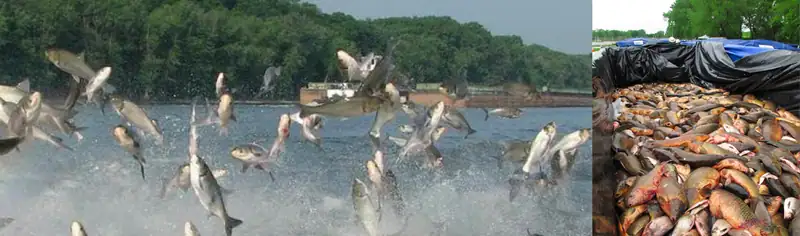
Imagine sailing down a river in a small motorboat on a weekend afternoon; the water is smooth and you are enjoying the warm sunshine and cool breeze when suddenly you are hit in the head by a 20-pound silver carp. This is now a risk on many rivers and canal systems in Illinois and Missouri because of the presence of Asian carp.
This fish—actually a group of species including the silver, black, grass, and big head carp—has been farmed and eaten in China for over 1000 years. It is one of the most important aquaculture food resources worldwide. In the United States, however, Asian carp is considered a dangerous invasive species that disrupts community structure and composition to the point of threatening native species.
45.1 Population Demography¶
Learning Objectives
By the end of this section, you will be able to do the following:
- Describe how ecologists measure population size and density
- Describe three different patterns of population distribution
- Use life tables to calculate mortality rates
- Describe the three types of survivorship curves and relate them to specific populations
Populations are dynamic entities. A population consists of all of the individuals of a particular species that occur in a particular area and have the potential to interact with one another. Populations fluctuate based on a number of factors: seasonal and yearly changes in the environment, natural disasters such as forest fires and volcanic eruptions, and competition for resources between and within species. The statistical study of population dynamics, demography, uses a series of mathematical tools to investigate how populations respond to changes in their biotic and abiotic environments. Many of these tools were originally designed to study human populations. For example, life tables, which detail the life expectancy of individuals within a population, were initially developed by life insurance companies to set insurance rates. In fact, while the term “demographics” is commonly used when discussing humans, all living populations can be studied using this approach.
Population Size and Density¶
The study of any population usually begins by determining how many individuals of a particular species exist, and how closely associated they are with each other. Within a particular habitat, a population can be characterized by its population size (N), the total number of individuals, and its population density, the number of individuals within a specific area or volume. Population size and density are the two main characteristics used to describe and understand populations. For example, populations with more individuals may be more stable than smaller populations based on their genetic variability, and thus their potential to adapt to the environment. Alternatively, a member of a population with low population density (more spread out in the habitat), might have more difficulty finding a mate to reproduce compared to a population of higher density. As is shown in Figure 45.2, smaller organisms tend to be more densely distributed than larger organisms.
Visual Connection
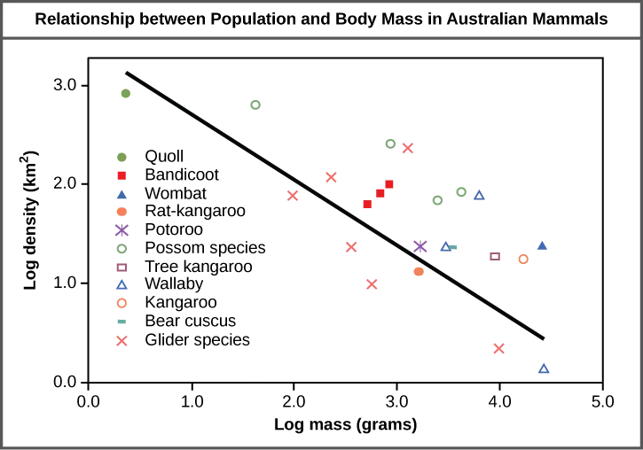
As this graph shows, population density typically decreases with increasing body size. Why do you think this is the case?
Population Research Methods¶
The most accurate way to determine population size is to simply count all of the individuals within the habitat. However, this method is often not logistically or economically feasible, especially when studying large habitats. Thus, scientists usually study populations by sampling a representative portion of each habitat and using this data to make inferences about the habitat as a whole. A variety of methods can be used to sample populations to determine their size and density. For immobile organisms such as plants, or for very small and slow-moving organisms, a quadrat may be used (Figure 45.3). A quadrat is a way of marking off square areas within a habitat, either by staking out an area with sticks and string, or by the use of a wood, plastic, or metal square placed on the ground. After setting the quadrats, researchers then count the number of individuals that lie within their boundaries. Multiple quadrat samples are performed throughout the habitat at several random locations to estimate the population size and density within the entire habitat. The number and size of quadrat samples depends on the type of organisms under study and other factors, including the density of the organism. For example, if sampling daffodils, a 1 m2 quadrat might be used. With giant redwoods, on the other hand, a larger quadrat of 100 m2 might be employed. This ensures that enough individuals of the species are counted to get an accurate sample that correlates with the habitat, including areas not sampled.
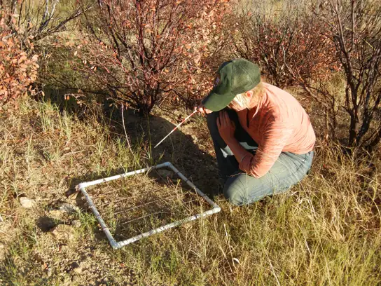
For mobile organisms, such as mammals, birds, or fish, scientists use a technique called mark and recapture. This method involves marking a sample of captured animals in some way (such as tags, bands, paint, or other body markings), and then releasing them back into the environment to allow them to mix with the rest of the population. Later, researchers collect a new sample, including some individuals that are marked (recaptures) and some individuals that are unmarked (Figure 45.4).
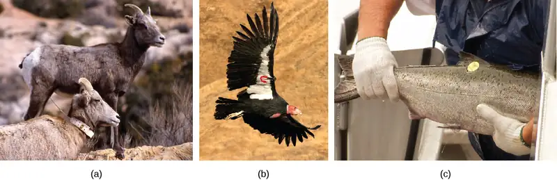
Using the ratio of marked and unmarked individuals, scientists determine how many individuals are in the sample. From this, calculations are used to estimate the total population size. This method assumes that the larger the population, the lower the percentage of tagged organisms that will be recaptured since they will have mixed with more untagged individuals. For example, if 80 deer are captured, tagged, and released into the forest, and later 100 deer are captured and 20 of them are already marked, we can estimate the population size (N) using the following equation:
Using our example, the population size would be estimated at 400.
Therefore, there are an estimated 400 total individuals in the original population.
There are some limitations to the mark and recapture method. Some animals from the first catch may learn to avoid capture in the second round, thus inflating population estimates. Alternatively, some animals may prefer to be retrapped (especially if a food reward is offered), resulting in an underestimate of population size. Also, some species may be harmed by the marking technique, reducing their survival. A variety of other techniques have been developed, including the electronic tracking of animals tagged with radio transmitters and the use of data from commercial fishing and trapping operations to estimate the size and health of populations and communities.
Species Distribution¶
In addition to measuring simple density, further information about a population can be obtained by looking at the distribution of the individuals. Species dispersion patterns (or distribution patterns) show the spatial relationship between members of a population within a habitat at a particular point in time. In other words, they show whether members of the species live close together or far apart, and what patterns are evident when they are spaced apart.
Individuals in a population can be equally spaced apart, dispersed randomly with no predictable pattern, or clustered in groups. These are known as uniform, random, and clumped dispersion patterns, respectively (Figure 45.5). Uniform dispersion is observed in plants that secrete substances inhibiting the growth of nearby individuals (such as the release of toxic chemicals by the sage plant Salvia leucophylla, a phenomenon called allelopathy) and in animals like the penguin that maintain a defined territory. An example of random dispersion occurs with dandelion and other plants that have wind-dispersed seeds that germinate wherever they happen to fall in a favorable environment. A clumped dispersion may be seen in plants that drop their seeds straight to the ground, such as oak trees, or in animals that live in groups (schools of fish or herds of elephants). Clumped dispersions may also be a function of habitat heterogeneity. Thus, the dispersion of the individuals within a population provides more information about how they interact with each other than does a simple density measurement. Just as lower density species might have more difficulty finding a mate, solitary species with a random distribution might have a similar difficulty when compared to social species clumped together in groups.
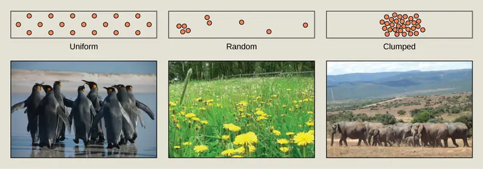
Demography¶
While population size and density describe a population at one particular point in time, scientists must use demography to study the dynamics of a population. Demography is the statistical study of population changes over time: birth rates, death rates, and life expectancies. Each of these measures, especially birth rates, may be affected by the population characteristics described above. For example, a large population size results in a higher birth rate because more potentially reproductive individuals are present. In contrast, a large population size can also result in a higher death rate because of competition, disease, and the accumulation of waste. Similarly, a higher population density or a clumped dispersion pattern results in more potential reproductive encounters between individuals, which can increase birth rate. Lastly, a female-biased sex ratio (the ratio of males to females) or age structure (the proportion of population members at specific age ranges) composed of many individuals of reproductive age can increase birth rates.
In addition, the demographic characteristics of a population can influence how the population grows or declines over time. If birth and death rates are equal, the population remains stable. However, the population size will increase if birth rates exceed death rates; the population will decrease if birth rates are less than death rates. Life expectancy is another important factor; the length of time individuals remain in the population impacts local resources, reproduction, and the overall health of the population. These demographic characteristics are often displayed in the form of a life table.
Life Tables¶
Life tables provide important information about the life history of an organism. Life tables divide the population into age groups and often sexes, and show how long a member of that group is likely to live. They are modeled after actuarial tables used by the insurance industry for estimating human life expectancy. Life tables may include the probability of individuals dying before their next birthday (i.e., their mortality rate), the percentage of surviving individuals dying at a particular age interval, and their life expectancy at each interval. An example of a life table is shown in Table 45.1 from a study of Dall mountain sheep, a species native to northwestern North America. Notice that the population is divided into age intervals (column A). The mortality rate (per 1000), shown in column D, is based on the number of individuals dying during the age interval (column B) divided by the number of individuals surviving at the beginning of the interval (Column C), multiplied by 1000.
For example, between ages three and four, 12 individuals die out of the 776 that were remaining from the original 1000 sheep. This number is then multiplied by 1000 to get the mortality rate per thousand.
As can be seen from the mortality rate data (column D), a high death rate occurred when the sheep were between 6 and 12 months old, and then increased even more from 8 to 12 years old, after which there were few survivors. The data indicate that if a sheep in this population were to survive to age one, it could be expected to live another 7.7 years on average, as shown by the life expectancy numbers in column E.
Table 45.1 This life table of Ovis dalli shows the number of deaths, number of survivors, mortality rate, and life expectancy at each age interval for the Dall mountain sheep.
| Life Table of Dall Mountain Sheep1 | ||||
|---|---|---|---|---|
| Age interval (years) | Number dying in age interval out of 1000 born | Number surviving at beginning of age interval out of 1000 born | Mortality rate per 1000 alive at beginning of age interval | Life expectancy or mean lifetime remaining to those attaining age interval |
| 0-0.5 | 54 | 1000 | 54.0 | 7.06 |
| 0.5-1 | 145 | 946 | 153.3 | -- |
| 1-2 | 12 | 801 | 15.0 | 7.7 |
| 2-3 | 13 | 789 | 16.5 | 6.8 |
| 3-4 | 12 | 776 | 15.5 | 5.9 |
| 4-5 | 30 | 764 | 39.3 | 5.0 |
| 5-6 | 46 | 734 | 62.7 | 4.2 |
| 6-7 | 48 | 688 | 69.8 | 3.4 |
| 7-8 | 69 | 640 | 107.8 | 2.6 |
| 8-9 | 132 | 571 | 231.2 | 1.9 |
| 9-10 | 187 | 439 | 426.0 | 1.3 |
| 10-11 | 156 | 252 | 619.0 | 0.9 |
| 11-12 | 90 | 96 | 937.5 | 0.6 |
| 12-13 | 3 | 6 | 500.0 | 1.2 |
| 13-14 | 3 | 3 | 1000 | 0.7 |
Survivorship Curves¶
Another tool used by population ecologists is a survivorship curve, which is a graph of the number of individuals surviving at each age interval plotted versus time (usually with data compiled from a life table). These curves allow us to compare the life histories of different populations (Figure 45.6). Humans and most primates exhibit a Type I survivorship curve because a high percentage of offspring survive their early and middle years—death occurs predominantly in older individuals. These types of species usually have small numbers of offspring at one time, and they give a high amount of parental care to them to ensure their survival. Birds are an example of an intermediate or Type II survivorship curve because birds die more or less equally at each age interval. These organisms also may have relatively few offspring and provide significant parental care. Trees, marine invertebrates, and most fishes exhibit a Type III survivorship curve because very few of these organisms survive their younger years; however, those that make it to an old age are more likely to survive for a relatively long period of time. Organisms in this category usually have a very large number of offspring, but once they are born, little parental care is provided. Thus these offspring are “on their own” and vulnerable to predation, but their sheer numbers assure the survival of enough individuals to perpetuate the species.
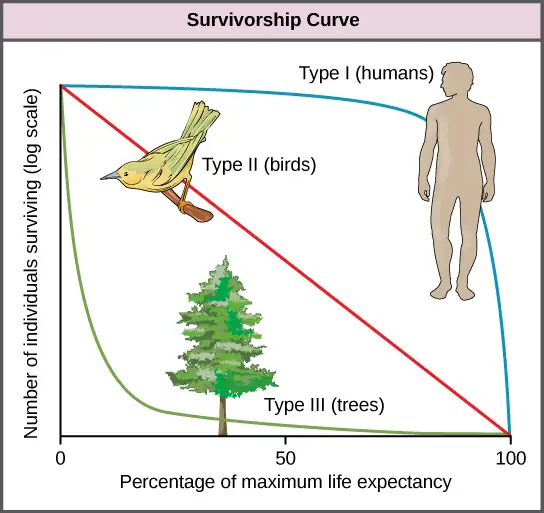
45.2 Life Histories and Natural Selection¶
Learning Objectives
By the end of this section, you will be able to do the following:
- Describe how life history patterns are influenced by natural selection
- Explain different life history patterns and how different reproductive strategies affect species’ survival
A species’ life history describes the series of events over its lifetime, such as how resources are allocated for growth, maintenance, and reproduction. Life history traits affect the life table of an organism. A species’ life history is genetically determined and shaped by the environment and natural selection.
Life History Patterns and Energy Budgets¶
Energy is required by all living organisms for their growth, maintenance, and reproduction; at the same time, energy is often a major limiting factor in determining an organism’s survival. Plants, for example, acquire energy from the sun via photosynthesis, but must expend this energy to grow, maintain health, and produce energy-rich seeds to produce the next generation. Animals have the additional burden of using some of their energy reserves to acquire food. Furthermore, some animals must expend energy caring for their offspring. Thus, all species have an energy budget: they must balance energy intake with their use of energy for metabolism, reproduction, parental care, and energy storage (such as bears building up body fat for winter hibernation).
Parental Care and Fecundity¶
Fecundity is the potential reproductive capacity of an individual within a population. In other words, fecundity describes how many offspring could ideally be produced if an individual has as many offspring as possible, repeating the reproductive cycle as soon as possible after the birth of the offspring. In animals, fecundity is inversely related to the amount of parental care given to an individual offspring. Species, such as many marine invertebrates, that produce many offspring usually provide little if any care for the offspring (they would not have the energy or the ability to do so anyway). Most of their energy budget is used to produce many tiny offspring. Animals with this strategy are often self-sufficient at a very early age. This is because of the energy tradeoff these organisms have made to maximize their evolutionary fitness. Because their energy is used for producing offspring instead of parental care, it makes sense that these offspring have some ability to be able to move within their environment and find food and perhaps shelter. Even with these abilities, their small size makes them extremely vulnerable to predation, so the production of many offspring allows enough of them to survive to maintain the species.
Animal species that have few offspring during a reproductive event usually give extensive parental care, devoting much of their energy budget to these activities, sometimes at the expense of their own health. This is the case with many mammals, such as humans, kangaroos, and pandas. The offspring of these species are relatively helpless at birth and need to develop before they achieve self-sufficiency.
Plants with low fecundity produce few energy-rich seeds (such as coconuts and chestnuts) with each having a good chance to germinate into a new organism; plants with high fecundity usually have many small, energy-poor seeds (like orchids) that have a relatively poor chance of surviving. Although it may seem that coconuts and chestnuts have a better chance of surviving, the energy tradeoff of the orchid is also very effective. It is a matter of where the energy is used, for large numbers of seeds or for fewer seeds with more energy.
Early versus Late Reproduction¶
The timing of reproduction in a life history also affects species survival. Organisms that reproduce at an early age have a greater chance of producing offspring, but this is usually at the expense of their growth and the maintenance of their health. Conversely, organisms that start reproducing later in life often have greater fecundity or are better able to provide parental care, but they risk that they will not survive to reproductive age. Examples of this can be seen in fishes. Small fish, like guppies, use their energy to reproduce rapidly, but never attain the size that would give them defense against some predators. Larger fish, like the bluegill or shark, use their energy to attain a large size, but do so with the risk that they will die before they can reproduce or at least reproduce to their maximum. These different energy strategies and tradeoffs are key to understanding the evolution of each species as it maximizes its fitness and fills its niche. In terms of energy budgeting, some species “blow it all” and use up most of their energy reserves to reproduce early before they die. Other species delay having reproduction to become stronger, more experienced individuals and to make sure that they are strong enough to provide parental care if necessary.
Single versus Multiple Reproductive Events¶
Some life history traits, such as fecundity, timing of reproduction, and parental care, can be grouped together into general strategies that are used by multiple species. Semelparity occurs when a species reproduces only once during its lifetime and then dies. Such species use most of their resource budget during a single reproductive event, sacrificing their health to the point that they do not survive. Examples of semelparity are bamboo, which flowers once and then dies, and the Chinook salmon (Figure 45.7a), which uses most of its energy reserves to migrate from the ocean to its freshwater nesting area, where it reproduces and then dies. Scientists have posited alternate explanations for the evolutionary advantage of the Chinook’s post-reproduction death: a programmed suicide caused by a massive release of corticosteroid hormones, presumably so the parents can become food for the offspring, or simple exhaustion caused by the energy demands of reproduction; these are still being debated.
Iteroparity describes species that reproduce repeatedly during their lives. Some animals are able to mate only once per year, but survive multiple mating seasons. The pronghorn antelope is an example of an animal that goes into a seasonal estrus cycle (“heat”): a hormonally induced physiological condition preparing the body for successful mating (Figure 45.7b). Females of these species mate only during the estrus phase of the cycle. A different pattern is observed in primates, including humans and chimpanzees, which may attempt reproduction at any time during their reproductive years, even though their menstrual cycles make pregnancy likely only a few days per month during ovulation (Figure 45.7c).
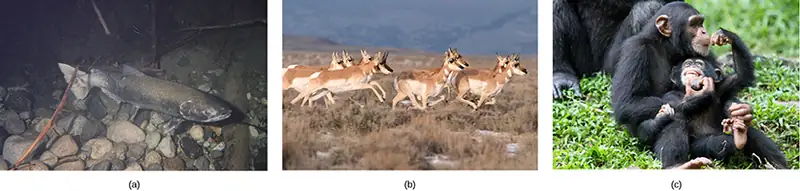
Interactive
Play this interactive PBS evolution-based mating game to learn more about reproductive strategies.
Evolution Connection: Energy Budgets, Reproductive Costs, and Sexual Selection in Drosophila
Research into how animals allocate their energy resources for growth, maintenance, and reproduction has used a variety of experimental animal models. Some of this work has been done using the common fruit fly, Drosophila melanogaster. Studies have shown that not only does reproduction have a cost as far as how long male fruit flies live, but also fruit flies that have already mated several times have limited sperm remaining for reproduction. Fruit flies maximize their last chances at reproduction by selecting optimal mates.
In a 1981 study, male fruit flies were placed in enclosures with either virgin or inseminated females. The males that mated with virgin females had shorter life spans than those in contact with the same number of inseminated females with which they were unable to mate. This effect occurred regardless of how large (indicative of their age) the males were. Thus, males that did not mate lived longer, allowing them more opportunities to find mates in the future.
More recent studies, performed in 2006, show how males select the female with which they will mate and how this is affected by previous matings (Figure 45.8).2 Males were allowed to select between smaller and larger females. Findings showed that larger females had greater fecundity, producing twice as many offspring per mating as the smaller females did. Males that had previously mated, and thus had lower supplies of sperm, were termed “resource-depleted,” while males that had not mated were termed “non-resource-depleted.” The study showed that although non-resource-depleted males preferentially mated with larger females, this selection of partners was more pronounced in the resource-depleted males. Thus, males with depleted sperm supplies, which were limited in the number of times that they could mate before they replenished their sperm supply, selected larger, more fecund females, thus maximizing their chances for offspring. This study was one of the first to show that the physiological state of the male affected its mating behavior in a way that clearly maximizes its use of limited reproductive resources.
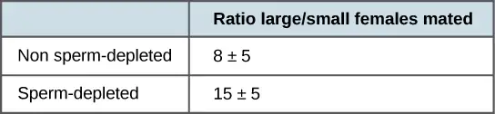
These studies demonstrate two ways in which the energy budget is a factor in reproduction. First, energy expended on mating may reduce an animal’s lifespan, but by this time they have already reproduced, so in the context of natural selection this early death is not of much evolutionary importance. Second, when resources such as sperm (and the energy needed to replenish it) are low, an organism’s behavior can change to give them the best chance of passing their genes on to the next generation. These changes in behavior, so important to evolution, are studied in a discipline known as behavioral biology, or ethology, at the interface between population biology and psychology.
45.3 Environmental Limits to Population Growth¶
Learning Objectives
By the end of this section, you will be able to do the following:
- Explain the characteristics of and differences between exponential and logistic growth patterns
- Give examples of exponential and logistic growth in natural populations
- Describe how natural selection and environmental adaptation led to the evolution of particular life history patterns
Although life histories describe the way many characteristics of a population (such as their age structure) change over time in a general way, population ecologists make use of a variety of methods to model population dynamics mathematically. These more precise models can then be used to accurately describe changes occurring in a population and better predict future changes. Certain long-accepted models are now being modified or even abandoned due to their lack of predictive ability, and scholars strive to create effective new models.
Exponential Growth¶
Charles Darwin, in his theory of natural selection, was greatly influenced by the English clergyman Thomas Malthus. Malthus published a book in 1798 stating that populations with unlimited natural resources grow very rapidly, which represents an exponential growth, and then population growth decreases as resources become depleted, indicating a logistic growth.
The best example of exponential growth is seen in bacteria. Bacteria reproduce by prokaryotic fission. This division takes about an hour for many bacterial species. If 1000 bacteria are placed in a large flask with an unlimited supply of nutrients (so the nutrients will not become depleted), after an hour, there is one round of division and each organism divides, resulting in 2000 organisms—an increase of 1000. In another hour, each of the 2000 organisms will double, producing 4000, an increase of 2000 organisms. After the third hour, there should be 8000 bacteria in the flask, an increase of 4000 organisms. The important concept of exponential growth is the accelerating population growth rate—the number of organisms added in each reproductive generation—that is, it is increasing at a greater and greater rate. After 1 day and 24 of these cycles, the population would have increased from 1000 to more than 16 billion. When the population size, N, is plotted over time, a J-shaped growth curve is produced (Figure 45.9).
The bacteria example is not representative of the real world where resources are limited. Furthermore, some bacteria will die during the experiment and thus not reproduce, lowering the growth rate. Therefore, when calculating the growth rate of a population, the death rate (D) (number organisms that die during a particular time interval) is subtracted from the birth rate (B) (number organisms that are born during that interval). This is shown in the following formula:
The birth rate is usually expressed on a per capita (for each individual) basis. Thus, B (birth rate) = bN (the per capita birth rate “b” multiplied by the number of individuals “N”) and D (death rate) = dN (the per capita death rate “d” multiplied by the number of individuals “N”). Additionally, ecologists are interested in the population at a particular point in time, an infinitely small time interval. For this reason, the terminology of differential calculus is used to obtain the “instantaneous” growth rate, replacing the change in number and time with an instant-specific measurement of number and time.
Notice that the “d” associated with the first term refers to the derivative (as the term is used in calculus) and is different from the death rate, also called “d.” The difference between birth and death rates is further simplified by substituting the term “r” (intrinsic rate of increase signifying the maximum per capita growth rate under ideal conditions) for the relationship between birth and death rates:
The value “r” can be positive, meaning the population is increasing in size; or negative, meaning the population is decreasing in size; or zero, where the population’s size is unchanging, a condition known as zero population growth. A further refinement of the formula recognizes that different species have inherent differences in their intrinsic rate of increase (often thought of as the potential for reproduction), even under ideal conditions. Obviously, a bacterium can reproduce more rapidly and have a higher intrinsic rate of growth than a human. The maximal growth rate for a species is its biotic potential, or rmax, thus changing the equation to:
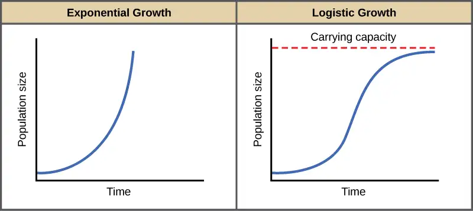
Logistic Growth¶
Exponential growth is possible only when infinite natural resources are available; this is not the case in the real world. Charles Darwin recognized this fact in his description of the “struggle for existence,” which states that individuals will compete (with members of their own or other species) for limited resources. The successful ones will survive to pass on their own characteristics and traits (which we know now are transferred by genes) to the next generation at a greater rate (natural selection). To model the reality of limited resources, population ecologists developed the logistic growth model.
Carrying Capacity and the Logistic Model¶
In the real world, with its limited resources, exponential growth cannot continue indefinitely. Exponential growth may occur in environments where there are few individuals and plentiful resources, but when the number of individuals gets large enough, resources will be depleted, slowing the growth rate. Eventually, the growth rate will plateau or level off (Figure 45.9). This population size, which represents the maximum population size that a particular environment can support, is called the carrying capacity, or K.
The formula we use to calculate logistic growth adds the carrying capacity as a moderating force in the growth rate. The expression “K – N” indicates how many individuals may be added to a population at a given stage, and “K – N” divided by “K” is the fraction of the carrying capacity available for further growth. Thus, the exponential growth model is restricted by this factor to generate the logistic growth equation:
Notice that when N is very small, (K-N)/K becomes close to K/K or 1, and the right side of the equation reduces to rmaxN, which means the population is growing exponentially and is not influenced by carrying capacity. On the other hand, when N is large, (K-N)/K comes close to zero, which means that population growth will be slowed greatly or even stopped. Thus, population growth is greatly slowed in large populations by the carrying capacity K. This model also allows for the population of a negative population growth, or a population decline. This occurs when the number of individuals in the population exceeds the carrying capacity (because the value of (K-N)/K is negative).
A graph of this equation yields an S-shaped curve (Figure 45.9), and it is a more realistic model of population growth than exponential growth. There are three different sections to an S-shaped curve. Initially, growth is exponential because there are few individuals and ample resources available. Then, as resources begin to become limited, the growth rate decreases. Finally, growth levels off at the carrying capacity of the environment, with little change in population size over time.
Role of Intraspecific Competition¶
The logistic model assumes that every individual within a population will have equal access to resources and, thus, an equal chance for survival. For plants, the amount of water, sunlight, nutrients, and the space to grow are the important resources, whereas in animals, important resources include food, water, shelter, nesting space, and mates.
In the real world, phenotypic variation among individuals within a population means that some individuals will be better adapted to their environment than others. The resulting competition between population members of the same species for resources is termed *intraspecific competition* (intra- = “within”; -specific = “species”). Intraspecific competition for resources may not affect populations that are well below their carrying capacity—resources are plentiful and all individuals can obtain what they need. However, as population size increases, this competition intensifies. In addition, the accumulation of waste products can reduce an environment’s carrying capacity.
Examples of Logistic Growth¶
Yeast, a microscopic fungus used to make bread and alcoholic beverages, exhibits the classical S-shaped curve when grown in a test tube (Figure 45.10a). Its growth levels off as the population depletes the nutrients. In the real world, however, there are variations to this idealized curve. Examples in wild populations include sheep and harbor seals (Figure 45.10b). In both examples, the population size exceeds the carrying capacity for short periods of time and then falls below the carrying capacity afterwards. This fluctuation in population size continues to occur as the population oscillates around its carrying capacity. Still, even with this oscillation, the logistic model is confirmed.
Visual Connection
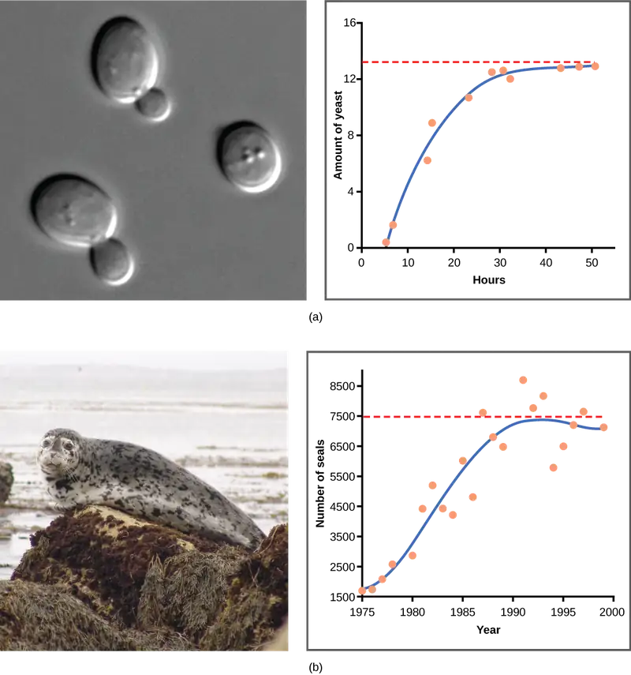
If the major food source of the seals declines due to pollution or overfishing, which of the following would likely occur?
- The carrying capacity of seals would decrease, as would the seal population.
- The carrying capacity of seals would decrease, but the seal population would remain the same.
- The number of seal deaths would increase but the number of births would also increase, so the population size would remain the same.
- The carrying capacity of seals would remain the same, but the population of seals would decrease.
45.4 Population Dynamics and Regulation¶
Learning Objectives
By the end of this section, you will be able to do the following:
- Give examples of how the carrying capacity of a habitat may change
- Compare and contrast density-dependent growth regulation and density-independent growth regulation, giving examples
- Give examples of exponential and logistic growth in wild animal populations
- Describe how natural selection and environmental adaptation leads to the evolution of particular life-history patterns
The logistic model of population growth, while valid in many natural populations and a useful model, is a simplification of real-world population dynamics. Implicit in the model is that the carrying capacity of the environment does not change, which is not the case. The carrying capacity varies annually: for example, some summers are hot and dry whereas others are cold and wet. In many areas, the carrying capacity during the winter is much lower than it is during the summer. Also, natural events such as earthquakes, volcanoes, and fires can alter an environment and hence its carrying capacity. Additionally, populations do not usually exist in isolation. They engage in interspecific competition: that is, they share the environment with other species competing for the same resources. These factors are also important to understanding how a specific population will grow.
Nature regulates population growth in a variety of ways. These are grouped into density-dependent factors, in which the density of the population at a given time affects growth rate and mortality, and density-independent factors, which influence mortality in a population regardless of population density. Note that in the former, the effect of the factor on the population depends on the density of the population at onset. Conservation biologists want to understand both types because this helps them manage populations and prevent extinction or overpopulation.
Density-Dependent Regulation¶
Most density-dependent factors are biological in nature (biotic), and include predation, inter- and intraspecific competition, accumulation of waste, and diseases such as those caused by parasites. Usually, the denser a population is, the greater its mortality rate. For example, during intra- and interspecific competition, the reproductive rates of the individuals will usually be lower, reducing their population’s rate of growth. In addition, low prey density increases the mortality of its predator because it has more difficulty locating its food source.
An example of density-dependent regulation is shown in Figure 45.11 with results from a study focusing on the giant intestinal roundworm (Ascaris lumbricoides), a parasite of humans and other mammals.3 Denser populations of the parasite exhibited lower fecundity: they contained fewer eggs. One possible explanation for this is that females would be smaller in more dense populations (due to limited resources) and that smaller females would have fewer eggs. This hypothesis was tested and disproved in a 2009 study which showed that female weight had no influence.4 The actual cause of the density-dependence of fecundity in this organism is still unclear and awaiting further investigation.
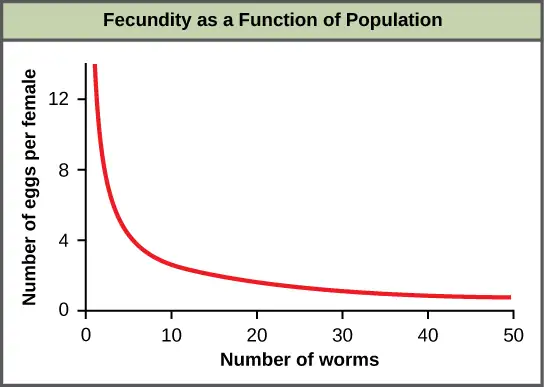
Density-Independent Regulation and Interaction with Density-Dependent Factors¶
Many factors, typically physical or chemical in nature (abiotic), influence the mortality of a population regardless of its density, including weather, natural disasters, and pollution. An individual deer may be killed in a forest fire regardless of how many deer happen to be in that area. Its chances of survival are the same whether the population density is high or low. The same holds true for cold winter weather.
In real-life situations, population regulation is very complicated and density-dependent and independent factors can interact. A dense population that is reduced in a density-independent manner by some environmental factor(s) will be able to recover differently than a sparse population. For example, a population of deer affected by a harsh winter will recover faster if there are more deer remaining to reproduce.
Evolution Connection: Why Did the Woolly Mammoth Go Extinct?
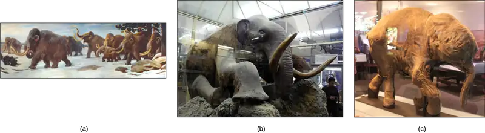
It's easy to get lost in the discussion about why dinosaurs went extinct 65 million years ago. Was it due to a meteor slamming into Earth near the coast of modern-day Mexico, or was it from some long-term weather cycle that is not yet understood? Scientists are continually exploring these and other theories.
Woolly mammoths began to go extinct much more recently, when they shared the Earth with humans who were no different anatomically than humans today (Figure 45.12). Mammoths survived in isolated island populations as recently as 1700 BC. We know a lot about these animals from carcasses found frozen in the ice of Siberia and other regions of the north. Scientists have sequenced at least 50 percent of its genome and believe mammoths are between 98 and 99 percent identical to modern elephants.
It is commonly thought that climate change and human hunting led to their extinction. A 2008 study estimated that climate change reduced the mammoth’s range from 3,000,000 square miles 42,000 years ago to 310,000 square miles 6,000 years ago.6 It is also well documented that humans hunted these animals. A 2012 study showed that no single factor was exclusively responsible for the extinction of these magnificent creatures.7 In addition to human hunting, climate change, and reduction of habitat, these scientists demonstrated another important factor in the mammoth’s extinction was the migration of humans across the Bering Strait to North America during the last ice age 20,000 years ago.
The maintenance of stable populations was and is very complex, with many interacting factors determining the outcome. It is important to remember that humans are also part of nature. We once contributed to a species’ decline using only primitive hunting technology.
Life Histories of K-selected and r-selected Species¶
While reproductive strategies play a key role in life histories, they do not account for important factors like limited resources and competition. The regulation of population growth by these factors can be used to introduce a classical concept in population biology, that of K-selected versus r-selected species.
The concept relates to a species’ reproductive strategies, habitat, and behavior, especially in the way that they obtain resources and care for their young. It includes length of life and survivorship factors as well. Population biologists have grouped species into the two large categories—K-selected and r-selected—although the categories are really two ends of a continuum.
K-selected species are species selected by stable, predictable environments. Populations of K-selected species tend to exist close to their carrying capacity (hence the term K-selected) where intraspecific competition is high. These species have few, large offspring, a long gestation period, and often give long-term care to their offspring (Table 45.2). While larger in size when born, the offspring are relatively helpless and immature at birth. By the time they reach adulthood, they must develop skills to compete for natural resources. In plants, scientists think of parental care more broadly: how long fruit takes to develop or how long it remains on the plant are determining factors in the time to the next reproductive event. Examples of K-selected species are primates (including humans), elephants, and plants such as oak trees (Figure 45.13a).
Oak trees grow very slowly and take, on average, 20 years to produce their first seeds, known as acorns. As many as 50,000 acorns can be produced by an individual tree, but the germination rate is low as many of these rot or are eaten by animals such as squirrels. In some years, oaks may produce an exceptionally large number of acorns, and these years may be on a two- or three-year cycle depending on the species of oak (r-selection).
As oak trees grow to a large size and for many years before they begin to produce acorns, they devote a large percentage of their energy budget to growth and maintenance. The tree’s height and size allow it to dominate other plants in the competition for sunlight, the oak’s primary energy resource. Furthermore, when it does reproduce, the oak produces large, energy-rich seeds that use their energy reserve to become quickly established (K-selection).
In contrast, r-selected species have a large number of small offspring (hence their r designation (Table 45.2)). This strategy is often employed in unpredictable or changing environments. Animals that are r-selected do not give long-term parental care and the offspring are relatively mature and self-sufficient at birth. Examples of r-selected species are marine invertebrates, such as jellyfish, and plants, such as the dandelion (Figure 45.13b). Dandelions have small seeds that are wind dispersed long distances. Many seeds are produced simultaneously to ensure that at least some of them reach a hospitable environment. Seeds that land in inhospitable environments have little chance for survival since their seeds are low in energy content. Note that survival is not necessarily a function of energy stored in the seed itself.
Table 45.2
| Characteristics of K-selected and r-selected species | |
|---|---|
| Characteristics of K-selected species | Characteristics of r-selected species |
| Mature late | Mature early |
| Greater longevity | Lower longevity |
| Increased parental care | Decreased parental care |
| Increased competition | Decreased competition |
| Fewer offspring | More offspring |
| Larger offspring | Smaller offspring |
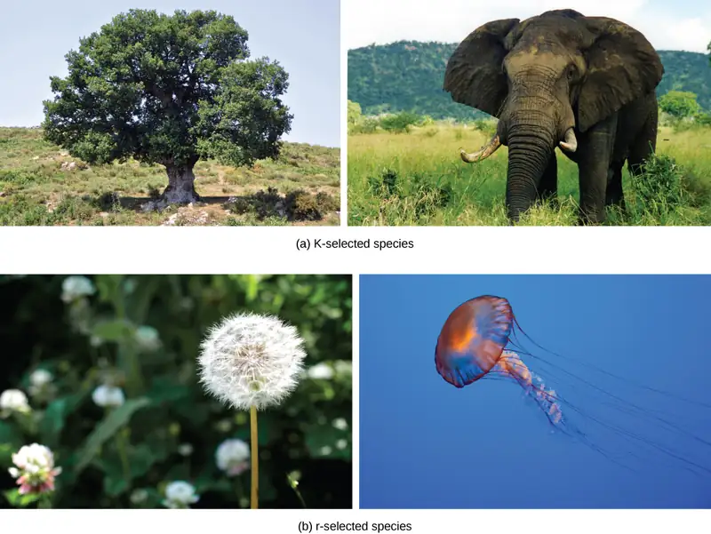
Modern Theories of Life History¶
By the second half of the twentieth century, the concept of K- and r-selected species was used extensively and successfully to study populations. The r- and K-selection theory, although accepted for decades and used for much groundbreaking research, has now been reconsidered, and many population biologists have abandoned or modified it. Over the years, several studies attempted to confirm the theory, but these attempts have largely failed. Many species were identified that did not follow the theory’s predictions. Furthermore, the theory ignored the age-specific mortality of the populations which scientists now know is very important. New demographic-based models of life history evolution have been developed which incorporate many ecological concepts included in r- and K-selection theory as well as population age structure and mortality factors.
45.5 Human Population Growth¶
Learning Objectives
By the end of this section, you will be able to do the following:
- Discuss exponential human population growth
- Explain how humans have expanded the carrying capacity of their habitat
- Relate population growth and age structure to the level of economic development in different countries
- Discuss the long-term implications of unchecked human population growth
Population dynamics can be applied to human population growth. Earth’s human population is growing rapidly, to the extent that some worry about the ability of the earth’s environment to sustain this population. Long-term exponential growth carries the potential risks of famine, disease, and large-scale death.
Although humans have increased the carrying capacity of their environment, the technologies used to achieve this transformation have caused unprecedented changes to Earth’s environment, altering ecosystems to the point where some may be in danger of collapse. The depletion of the ozone layer, erosion due to acid rain, and damage from global climate change are caused by human activities. The ultimate effect of these changes on our carrying capacity is unknown. As some point out, it is likely that the negative effects of increasing carrying capacity will outweigh the positive ones—the world’s carrying capacity for human beings might actually decrease.
The human population is currently experiencing exponential growth even though human reproduction is far below its biotic potential (Figure 45.14). To reach its biotic potential, all females would have to become pregnant every nine months or so during their reproductive years. Also, resources would have to be such that the environment would support such growth. Neither of these two conditions exists. In spite of this fact, human population is still growing exponentially.
![Graph plots the world population growth from 1000 A D to the present. The curve starts out flat, and then becomes increasingly steep. A sharp increase in population occurs around 1900. In 1000 A D the population was around 265 million. In 2000 it was around 6 billion. Populations of various parts of the world are also plotted, including Africa, Asia, Europe, Latin America, and Northern America. With the exception of Europe, the change in population in each region is similar to the change in world population. In Europe, the population is now stagnant.](img/figure-45-05-01.webp)
A consequence of exponential human population growth is a reduction in time that it takes to add a particular number of humans to the Earth. Figure 45.15 shows that 123 years were necessary to add 1 billion humans in 1930, but it only took 24 years to add two billion people between 1975 and 1999. As already discussed, our ability to increase our carrying capacity indefinitely may be limited. Without new technological advances, the human growth rate has been predicted to slow in the coming decades. However, the population will still be increasing and the threat of overpopulation remains.
![Bar graph shows the number of years it has taken to add each billion people to the world population. By 1800, there were about a billion people on Earth. It took 130 years, until 19 30, for the number to reach two billion. Thirty years later, in 19 60, the number reached three billion, and 15 years after that, in 19 75, the number reached four billion. The population reached five billion in 19 87, and six billion in 19 99, each twelve years apart. In 2012, the world population was nearly seven billion. The population is projected to reach 8 billion in 20 28, and 9 billion in 20 54, indicating that it will take more years between each increase in billions of people.](img/figure-45-05-02.webp)
Interactive
Click through this video of how human populations have changed over time.
Overcoming Density-Dependent Regulation¶
Humans are unique in their ability to alter their environment with the conscious purpose of increasing carrying capacity. This ability is a major factor responsible for human population growth and a way of overcoming density-dependent growth regulation. Much of this ability is related to human intelligence, society, and communication. Humans can construct shelter to protect them from the elements and have developed agriculture and domesticated animals to increase their food supplies. In addition, humans use language to communicate this technology to new generations, allowing them to improve upon previous accomplishments.
Other factors in human population growth are migration and public health. Humans originated in Africa, but have since migrated to nearly all inhabitable land on the Earth. Public health, sanitation, and the use of antibiotics and vaccines have decreased the ability of infectious disease to limit human population growth. In the past, diseases such as the bubonic plaque of the fourteenth century killed between 30 and 60 percent of Europe’s population and reduced the overall world population by as many as 100 million people. Today, the threat of infectious disease, while not gone, is certainly less severe. According to the Institute for Health Metrics and Evaluation (IHME) in Seattle, global death from infectious disease declined from 15.4 million in 1990 to 10.4 million in 2017. To compare to some of the epidemics of the past, the percentage of the world's population killed between 1993 and 2002 decreased from 0.30 percent of the world's population to 0.14 percent. Thus, infectious disease influence on human population growth is becoming less significant.
Age Structure, Population Growth, and Economic Development¶
The age structure of a population is an important factor in population dynamics. Age structure is the proportion of a population at different age ranges. Age structure allows better prediction of population growth, plus the ability to associate this growth with the level of economic development in the region. Countries with rapid growth have a pyramidal shape in their age structure diagrams, showing a preponderance of younger individuals, many of whom are of reproductive age or will be soon (Figure 45.16). This pattern is most often observed in underdeveloped countries where individuals do not live to old age because of less-than-optimal living conditions. Age structures of areas with slow growth, including developed countries such as the United States, still have a pyramidal structure, but with many fewer young and reproductive-aged individuals and a greater proportion of older individuals. Other developed countries, such as Italy, have zero population growth. The age structure of these populations is more conical, with an even greater percentage of middle-aged and older individuals. The actual growth rates in different countries are shown in Figure 45.17, with the highest rates tending to be in the less economically developed countries of Africa and Asia.
Visual Connection
![For the four different age structure diagrams shown, the base represents birth and the apex occurs around age 70. The age structure diagram for stage 1, rapid growth, is shaped like a deflated triangle that starts out wide at the base and rapidly decreases to a narrow apex, indicating that the number of individuals decreases rapidly with age. The age structure diagram for stage 2, slow growth, is triangular in shape, indicating that the number of individuals decreases steadily with age. The age structure diagram for stage 3, stable growth, is rounded at the top, indicating that the number of individuals per age group decreases gradually at first, then decreases more rapidly for the older portion of the population. The final age structure diagram, stage 4, widens from the base to middle age, and then narrows to a rounded top. The population type indicated by this diagram is not given, as this is part of the Visual Connection question.](img/figure-45-05-03.webp)
Age structure diagrams for rapidly growing, slow growing, and stable populations are shown in stages 1 through 3. What type of population change do you think stage 4 represents?
![Percent population growth, which ranges from zero percent to three plus percent, is shown on a world map. Eastern europe, Northern Asia, Greenland and South Africa are experiencing zero percent population growth. The United States, Canada, the southern part of South America, China, Japan, western Europe and Australia are experiencing zero to one percent population growth. Mexico, the northern part of South America, and parts of Africa, the Middle East and Asia are experiencing one percent population growth. Most of Africa and parts of the Middle East and Asia are experiencing two percent population growth. Some parts of Africa are experiencing three percent population growth.](img/figure-45-05-04.webp)
Long-Term Consequences of Exponential Human Population Growth¶
Many dire predictions have been made about the world’s population leading to a major crisis called the “population explosion.” In the 1968 book The Population Bomb, biologist Dr. Paul R. Ehrlich wrote, “The battle to feed all of humanity is over. In the 1970s hundreds of millions of people will starve to death in spite of any crash programs embarked upon now. At this late date nothing can prevent a substantial increase in the world death rate.”8 While many experts view this statement as incorrect based on evidence, the laws of exponential population growth are still in effect, and unchecked human population growth cannot continue indefinitely.
Several nations have instituted policies aimed at influencing population. Efforts to control population growth led to the one-child policy in China, which is now being phased out. India also implements national and regional policies to encourage family planning. On the other hand, Japan, Spain, Russia, Iran, and other countries have made efforts to increase population growth after birth rates dipped. Such policies are controversial, and the human population continues to grow. At some point the food supply may run out, but the outcomes are difficult to predict. The United Nations estimates that future world population growth may vary from 6 billion (a decrease) to 16 billion people by the year 2100.
Another result of population growth is the endangerment of the natural environment. Many countries have attempted to reduce the human impact on climate change by reducing their emission of the greenhouse gas carbon dioxide. However, these treaties have not been ratified by every country. The role of human activity in causing climate change has become a hotly debated socio-political issue in some countries, including the United States. Thus, we enter the future with considerable uncertainty about our ability to curb human population growth and protect our environment.
Interactive
Visit this website and choose a video to watch about human population.
45.6 Community Ecology¶
Learning Objectives
By the end of this section, you will be able to do the following:
- Discuss the predator-prey cycle
- Give examples of defenses against predation and herbivory
- Describe the competitive exclusion principle
- Give examples of symbiotic relationships between species
- Describe community structure and succession
Populations rarely, if ever, live in isolation from populations of other species. In most cases, numerous species share a habitat. The interactions between these populations play a major role in regulating population growth and abundance. All populations occupying the same habitat form a community: populations inhabiting a specific area at the same time. The number of species occupying the same habitat and their relative abundance is known as species diversity. Areas with low diversity, such as the glaciers of Antarctica, still contain a wide variety of living things, whereas the diversity of tropical rainforests is so great that it cannot be counted. Ecology is studied at the community level to understand how species interact with each other and compete for the same resources.
Predation and Herbivory¶
Perhaps the classical example of species interaction is predation: the consumption of prey by its predator. Nature shows on television highlight the drama of one living organism killing another. Populations of predators and prey in a community are not constant over time: in most cases, they vary in cycles that appear to be related. The most often cited example of predator-prey dynamics is seen in the cycling of the lynx (predator) and the snowshoe hare (prey), using nearly 200 year-old trapping data from North American forests (Figure 45.18). This cycle of predator and prey lasts approximately 10 years, with the predator population lagging 1–2 years behind that of the prey population. As the hare numbers increase, there is more food available for the lynx, allowing the lynx population to increase as well. When the lynx population grows to a threshold level, however, they kill so many hares that hare population begins to decline, followed by a decline in the lynx population because of scarcity of food. When the lynx population is low, the hare population size begins to increase due, at least in part, to low predation pressure, starting the cycle anew.
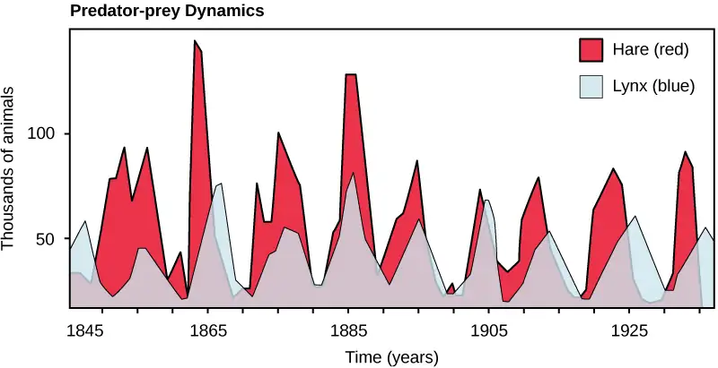
Some researchers question the idea that predation models entirely control the population cycling of the two species. More recent studies have pointed to undefined density-dependent factors as being important in the cycling, in addition to predation. One possibility is that the cycling is inherent in the hare population due to density-dependent effects such as lower fecundity (maternal stress) caused by crowding when the hare population gets too dense. The hare cycling would then induce the cycling of the lynx because it is the lynxes’ major food source. The more we study communities, the more complexities we find, allowing ecologists to derive more accurate and sophisticated models of population dynamics.
Herbivory describes the consumption of plants by insects and other animals, and it is another interspecific relationship that affects populations. Unlike animals, most plants cannot outrun predators or use mimicry to hide from hungry animals. Some plants have developed mechanisms to defend against herbivory. Other species have developed mutualistic relationships; for example, herbivory provides a mechanism of seed distribution that aids in plant reproduction.
Defense Mechanisms against Predation and Herbivory¶
The study of communities must consider evolutionary forces that act on the members of the various populations contained within it. Species are not static, but slowly changing and adapting to their environment by natural selection and other evolutionary forces. Species have evolved numerous mechanisms to escape predation and herbivory. These defenses may be mechanical, chemical, physical, or behavioral.
Mechanical defenses, such as the presence of thorns on plants or the hard shell on turtles, discourage animal predation and herbivory by causing physical pain to the predator or by physically preventing the predator from being able to eat the prey. Chemical defenses are produced by many animals as well as plants, such as the foxglove which is extremely toxic when eaten. Figure 45.19 shows some organisms’ defenses against predation and herbivory.
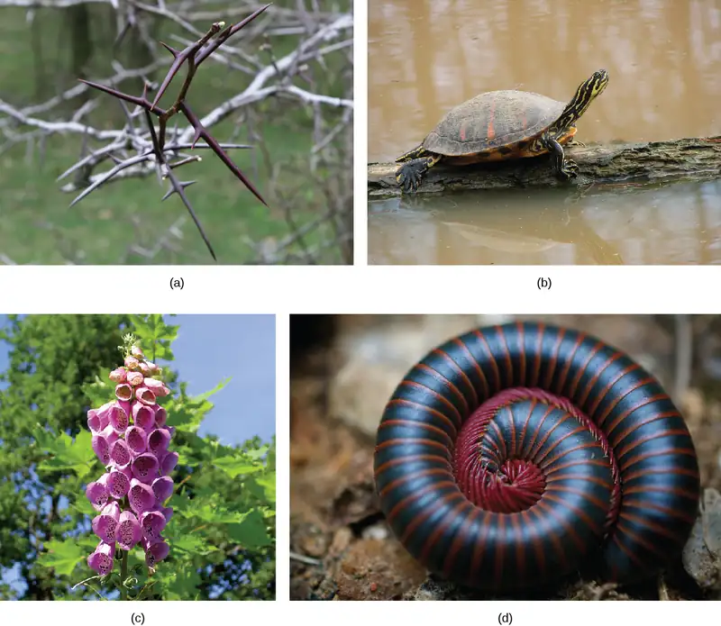
Many species use physical appearance, such as body shape and coloration, to avoid being detected by predators. The tropical walking stick is an insect with the coloration and body shape of a twig which makes it very hard to see when stationary against a background of real twigs (Figure 45.20a). In another example, the chameleon can, within limitations, change its color to match its surroundings (Figure 45.20b). Both of these are examples of camouflage, or avoiding detection by blending in with the background. There are many behavioral adaptations to avoid or confuse predators. Playing dead and traveling in large groups, like schools of fish or flocks of birds, are both behaviors that reduce the risk of being eaten.
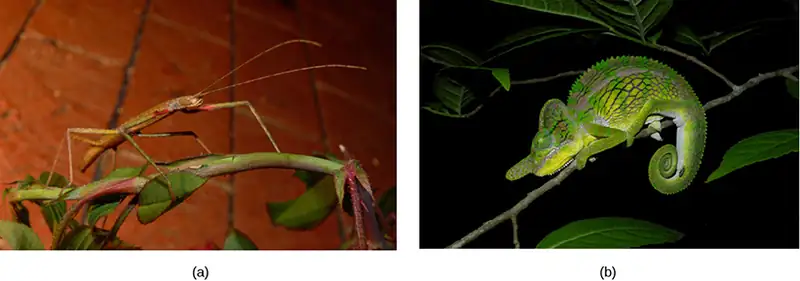
Some species use coloration as a way of warning predators that they are not good to eat. For example, the cinnabar moth caterpillar, the fire-bellied toad, and many species of beetle have bright colors that warn of a foul taste, the presence of toxic chemicals, and/or the ability to sting or bite, respectively. Predators that ignore this coloration and eat the organisms will experience their unpleasant taste or presence of toxic chemicals and learn not to eat them in the future. This type of defensive mechanism is called aposematic coloration, or warning coloration (Figure 45.21).
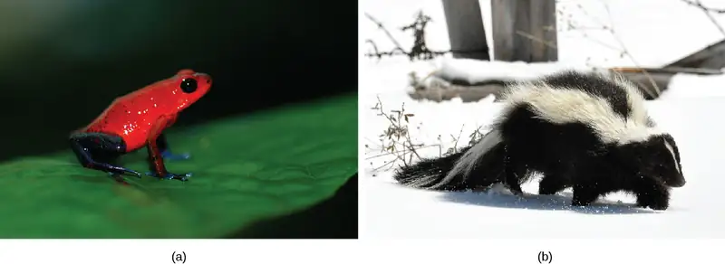
While some predators learn to avoid eating certain potential prey because of their coloration, other species have evolved mechanisms to mimic this coloration to avoid being eaten, even though they themselves may not be unpleasant to eat or contain toxic chemicals. In Batesian mimicry, a harmless species imitates the warning coloration of a harmful one. Assuming they share the same predators, this coloration then protects the harmless ones, even though they do not have the same level of physical or chemical defenses against predation as the organism they mimic. Many insect species mimic the coloration of wasps or bees, which are stinging, venomous insects, thereby discouraging predation (Figure 45.22).
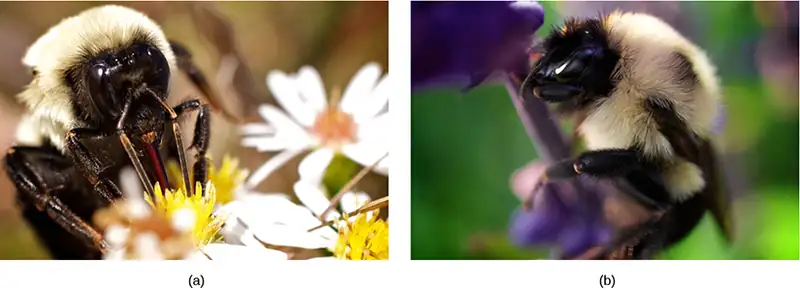
In Müllerian mimicry, multiple species share the same warning coloration, but all of them actually have defenses. Figure 45.23 shows a variety of foul-tasting butterflies with similar coloration. In Emsleyan/Mertensian mimicry, a deadly prey mimics a less dangerous one, such as the venomous coral snake mimicking the nonvenomous milk snake. This type of mimicry is extremely rare and more difficult to understand than the previous two types. For this type of mimicry to work, it is essential that eating the milk snake has unpleasant but not fatal consequences. Then, these predators learn not to eat snakes with this coloration, protecting the coral snake as well. If the snake were fatal to the predator, there would be no opportunity for the predator to learn not to eat it, and the benefit for the less toxic species would disappear.
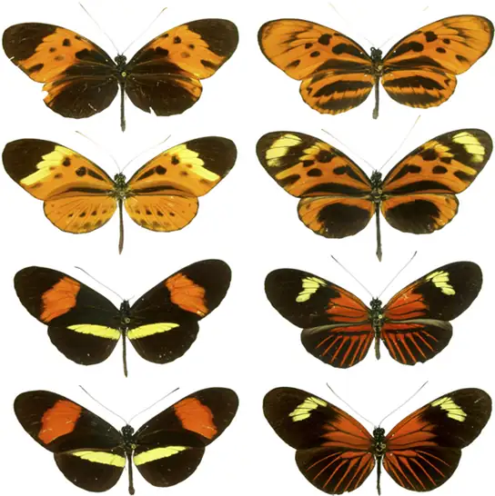
Interactive
Go to this website to view stunning examples of mimicry.
Competitive Exclusion Principle¶
Resources are often limited within a habitat and multiple species may compete to obtain them. All species have an ecological niche in the ecosystem, which describes how they acquire the resources they need and how they interact with other species in the community. The competitive exclusion principle states that two species cannot occupy the same niche in a habitat. In other words, different species cannot coexist in a community if they are competing for all the same resources. An example of this principle is shown in Figure 45.24, with two protozoan species, Paramecium aurelia and Paramecium caudatum. When grown individually in the laboratory, they both thrive. But when they are placed together in the same test tube (habitat), P. aurelia outcompetes P. caudatum for food, leading to the latter’s eventual extinction.
![Graphs a, b, and c all plot number of cells versus time in days. In Graph (a), P. aurelia is grown alone. In graph (b), P. caudatum is grown alone. In graph (c), both species are grown together. When grown apart, the two species both exhibit logistic growth and grow to a relatively high cell density. When the two species are grown together, P. aurelia shows logistic growth to nearly the same cell density as it exhibited when grown alone, but P. caudatum hardly grows at all, and eventually its population drops to zero.](img/figure-45-06-07abc.webp)
This exclusion may be avoided if a population evolves to make use of a different resource, a different area of the habitat, or feeds during a different time of day, called resource partitioning. The two organisms are then said to occupy different microniches. These organisms coexist by minimizing direct competition.
Symbiosis¶
Symbiotic relationships, or symbioses (plural), are close interactions between individuals of different species over an extended period of time which impact the abundance and distribution of the associating populations. Most scientists accept this definition, but some restrict the term to only those species that are mutualistic, where both individuals benefit from the interaction. In this discussion, the broader definition will be used.
Commensalism¶
A commensal relationship occurs when one species benefits from the close, prolonged interaction, while the other neither benefits nor is harmed. Birds nesting in trees provide an example of a commensal relationship (Figure 45.25). The tree is not harmed by the presence of the nest among its branches. The nests are light and produce little strain on the structural integrity of the branch, and most of the leaves, which the tree uses to get energy by photosynthesis, are above the nest so they are unaffected. The bird, on the other hand, benefits greatly. If the bird had to nest in the open, its eggs and young would be vulnerable to predators. Another example of a commensal relationship is the pilot fish and the shark. The pilot fish feed on the leftovers of the host's meals, and the host is not affected in any way.
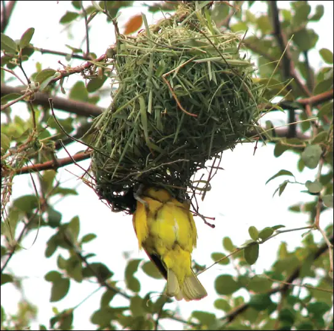
Mutualism¶
A second type of symbiotic relationship is called mutualism, where two species benefit from their interaction. Some scientists believe that these are the only true examples of symbiosis. For example, termites have a mutualistic relationship with protozoa that live in the insect’s gut (Figure 45.26a). The termite benefits from the ability of bacterial symbionts within the protozoa to digest cellulose. The termite itself cannot do this, and without the protozoa, it would not be able to obtain energy from its food (cellulose from the wood it chews and eats). The protozoa and the bacterial symbionts benefit by having a protective environment and a constant supply of food from the wood chewing actions of the termite. Lichens have a mutualistic relationship between fungus and photosynthetic algae or bacteria (Figure 45.26b). As these symbionts grow together, the glucose produced by the algae provides nourishment for both organisms, whereas the physical structure of the lichen protects the algae from the elements and makes certain nutrients in the atmosphere more available to the algae.
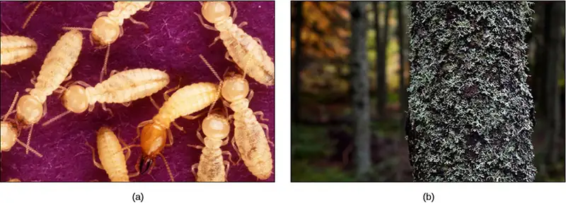
Parasitism¶
A parasite is an organism that lives in or on another living organism and derives nutrients from it. In this relationship, the parasite benefits, but the host is harmed. The host is usually weakened by the parasite as it siphons resources the host would normally use to maintain itself. The parasite, however, is unlikely to kill the host, especially not quickly, because this would allow no time for the organism to complete its reproductive cycle by spreading to another host.
The reproductive cycles of parasites are often very complex, sometimes requiring more than one host species. A tapeworm is a parasite that causes disease in humans when contaminated, undercooked meat is consumed (Figure 45.27). The tapeworm can live inside the intestine of the host for several years, benefiting from the food the host is eating, and may grow to be over 50 ft long by adding segments. The parasite moves from species to species in a cycle, making two hosts necessary to complete its life cycle.
Another common parasite is Plasmodium falciparum, the protozoan cause of malaria, a significant disease in many parts of the world. Living in human liver and red blood cells, the organism reproduces asexually in the gut of blood-feeding mosquitoes to complete its life cycle. Thus malaria is spread from human to human by mosquitoes, one of many arthropod-borne infectious diseases.
![The life cycle of a tapeworm begins when eggs or tapeworm segments in the feces (1) are ingested by pigs or humans (2). The embryos hatch, penetrate the intestinal wall, and circulate to the musculature in both pigs and humans (3). This figure shows how humans may acquire a tapeworm infection by ingesting raw or undercooked meat (4). Infection may result in cysts in the musculature, brains, and eyes, or in tapeworms in the intestine. Tapeworms attach themselves to the intestine via a hook-like structure called the scolex (5). Adult tapeworms are then present in the small intestine (6). Tapeworm segments and eggs are excreted in the feces, completing the cycle.](img/figure-b45-06-09ab.webp)
Characteristics of Communities¶
Communities are complex entities that can be characterized by their structure (the types and numbers of species present) and dynamics (how communities change over time). Understanding community structure and dynamics enables community ecologists to manage ecosystems more effectively.
Foundation Species¶
Foundation species are considered the “base” or “bedrock” of a community, having the greatest influence on its overall structure. They are usually the primary producers: organisms that bring most of the energy into the community. Kelp, or brown algae, is a foundation species, forming the basis of the kelp forests off the coast of California.
Foundation species may physically modify the environment to produce and maintain habitats that benefit the other organisms that use them. An example is the photosynthetic corals of the coral reef (Figure 45.28). Corals themselves are not photosynthetic, but harbor symbionts within their body tissues (dinoflagellates called zooxanthellae) that perform photosynthesis; this is another example of a mutualism. The exoskeletons of living and dead coral make up most of the reef structure, which protects many other species from waves and ocean currents.
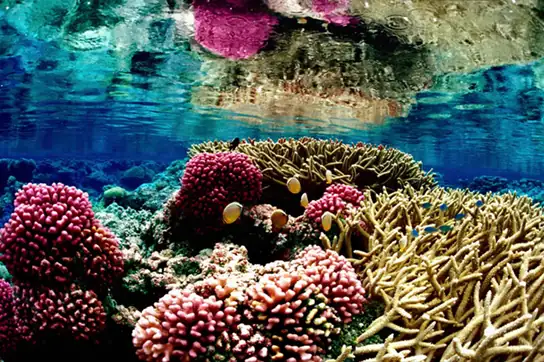
Biodiversity, Species Richness, and Relative Species Abundance¶
Biodiversity describes a community’s biological complexity: it is measured by the number of different species (species richness) in a particular area and their relative abundance (species evenness). The area in question could be a habitat, a biome, or the entire biosphere. Species richness is the term that is used to describe the number of species living in a habitat or biome. Species richness varies across the globe (Figure 45.29). One factor in determining species richness is latitude, with the greatest species richness occurring in ecosystems near the equator, which often have warmer temperatures, large amounts of rainfall, and low seasonality. The lowest species richness occurs near the poles, which are much colder, drier, and thus less conducive to life in recent geologic time (time since glaciations). The predictability of climate or productivity is also an important factor. Other factors influence species richness as well. For example, the study of island biogeography attempts to explain the relatively high species richness found in certain isolated island chains, including the Galápagos Islands that inspired the young Darwin. Relative species abundance is the number of individuals in a species relative to the total number of individuals in all species within a habitat, ecosystem, or biome. Foundation species often have the highest relative abundance of species.
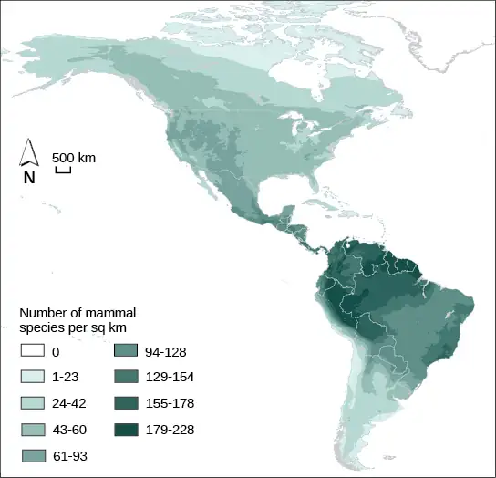
Keystone Species¶
A keystone species is one whose presence is key to maintaining biodiversity within an ecosystem and to upholding an ecological community’s structure. The intertidal sea star, Pisaster ochraceus, of the northwestern United States is a keystone species (Figure 45.30). Studies have shown that when this organism is removed from communities, populations of their natural prey (mussels) increase, completely altering the species composition and reducing biodiversity. Another keystone species is the banded tetra, a fish in tropical streams, which supplies nearly all of the phosphorus, a necessary inorganic nutrient, to the rest of the community. If these fish were to become extinct, the community would be greatly affected.
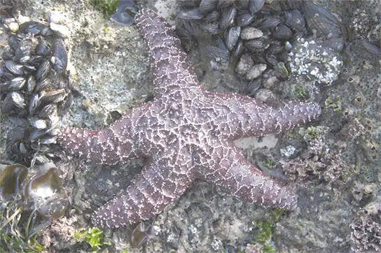
Everyday Connection: Invasive Species
Invasive species are nonnative organisms that, when introduced to an area out of their native range, threaten the ecosystem balance of that habitat. Many such species exist in the United States, as shown in Figure 45.31. Whether enjoying a forest hike, taking a summer boat trip, or simply walking down an urban street, you have likely encountered an invasive species.
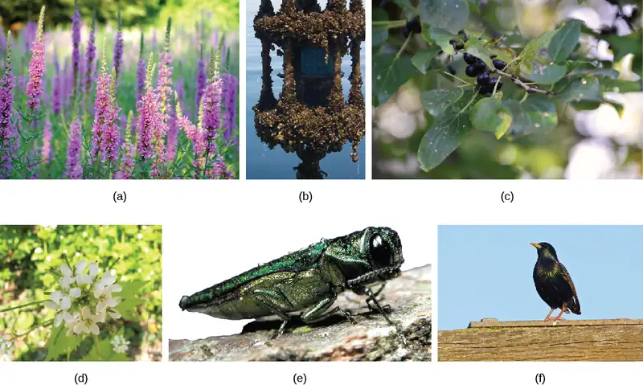
One of the many recent proliferations of an invasive species concerns the growth of Asian carp populations. Asian carp were introduced to the United States in the 1970s by fisheries and sewage treatment facilities that used the fish’s excellent filter feeding capabilities to clean their ponds of excess plankton. Some of the fish escaped, however, and by the 1980s they had colonized many waterways of the Mississippi River basin, including the Illinois and Missouri Rivers.
Voracious eaters and rapid reproducers, Asian carp may outcompete native species for food, potentially leading to their extinction. For example, black carp are voracious eaters of native mussels and snails, limiting this food source for native fish species. Silver carp eat plankton that native mussels and snails feed on, reducing this food source by a different alteration of the food web. In some areas of the Mississippi River, Asian carp species have become the most predominant, effectively outcompeting native fishes for habitat. In some parts of the Illinois River, Asian carp constitute 95 percent of the community's biomass. Although edible, the fish is bony and not a desired food in the United States. Moreover, their presence threatens the native fish and fisheries of the Great Lakes, which are important to local economies and recreational anglers. Asian carp have even injured humans. The fish, frightened by the sound of approaching motorboats, thrust themselves into the air, often landing in the boat or directly hitting the boaters.
The Great Lakes and their prized salmon and lake trout fisheries are also being threatened by these invasive fish. Asian carp have already colonized rivers and canals that lead into Lake Michigan. One infested waterway of particular importance is the Chicago Sanitary and Ship Channel, the major supply waterway linking the Great Lakes to the Mississippi River. To prevent the Asian carp from leaving the canal, a series of electric barriers have been successfully used to discourage their migration; however, the threat is significant enough that several states and Canada have sued to have the Chicago channel permanently cut off from Lake Michigan. Local and national politicians have weighed in on how to solve the problem, but no one knows whether the Asian carp will ultimately be considered a nuisance, like other invasive species such as the water hyacinth and zebra mussel, or whether it will be the destroyer of the largest freshwater fishery of the world.
The issues associated with Asian carp show how population and community ecology, fisheries management, and politics intersect on issues of vital importance to the human food supply and economy. Socio-political issues like this make extensive use of the sciences of population ecology (the study of members of a particular species occupying a particular area known as a habitat) and community ecology (the study of the interaction of all species within a habitat).
Community Dynamics¶
Community dynamics are the changes in community structure and composition over time. Sometimes these changes are induced by environmental disturbances such as volcanoes, earthquakes, storms, fires, and climate change. Communities with a stable structure are said to be at equilibrium. Following a disturbance, the community may or may not return to the equilibrium state.
Succession describes the sequential appearance and disappearance of species in a community over time. In primary succession, newly exposed or newly formed land is colonized by living things; in secondary succession, part of an ecosystem is disturbed and remnants of the previous community remain.
Primary Succession and Pioneer Species¶
Primary succession occurs when new land is formed or rock is exposed: for example, following the eruption of volcanoes, such as those on the Big Island of Hawaii. As lava flows into the ocean, new land is continually being formed. On the Big Island, approximately 32 acres of land is added each year. First, weathering and other natural forces break down the substrate enough for the establishment of certain hearty plants and lichens with few soil requirements, known as pioneer species (Figure 45.32). These species help to further break down the mineral rich lava into soil where other, less hardy species will grow and eventually replace the pioneer species. In addition, as these early species grow and die, they add to an ever-growing layer of decomposing organic material and contribute to soil formation. Over time the area will reach an equilibrium state, with a set of organisms quite different from the pioneer species.
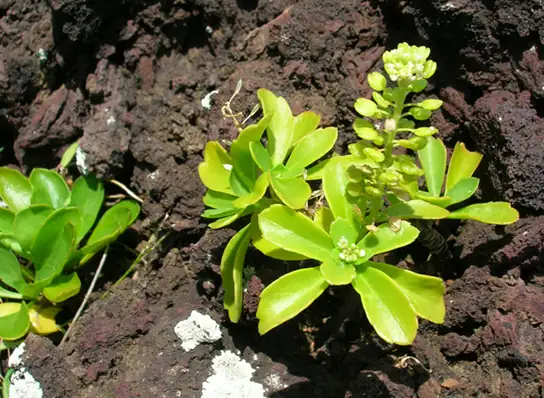
Secondary succession¶
A classic example of secondary succession occurs in oak and hickory forests cleared by wildfire (Figure 45.33). Wildfires will burn most vegetation and kill those animals unable to flee the area. Their nutrients, however, are returned to the ground in the form of ash. Thus, even when areas are devoid of life due to severe fires, the area will soon be ready for new life to take hold.
Before the fire, the vegetation was dominated by tall trees with access to the major plant energy resource: sunlight. Their height gave them access to sunlight while also shading the ground and other low-lying species. After the fire, though, these trees are no longer dominant. Thus, the first plants to grow back are usually annual plants followed within a few years by quickly growing and spreading grasses and other pioneer species. Due to, at least in part, changes in the environment brought on by the growth of the grasses and other species, over many years, shrubs will emerge along with small pine, oak, and hickory trees. These organisms are called intermediate species. Eventually, over 150 years, the forest will reach its equilibrium point where species composition is no longer changing and resembles the community before the fire. This equilibrium state is referred to as the climax community, which will remain stable until the next disturbance.
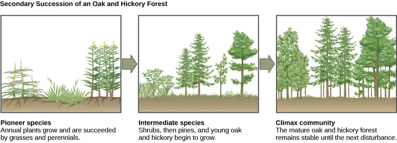
45.7 Behavioral Biology: Proximate and Ultimate Causes of Behavior¶
Learning Objectives
By the end of this section, you will be able to do the following:
- Compare innate and learned behavior
- Discuss how movement and migration behaviors are a result of natural selection
- Discuss the different ways members of a population communicate with each other
- Give examples of how species use energy for mating displays and other courtship behaviors
- Differentiate between various mating systems
- Describe different ways that species learn
Behavior is the change in activity of an organism in response to a stimulus. Behavioral biology is the study of the biological and evolutionary bases for such changes. The idea that behaviors evolved as a result of the pressures of natural selection is not new. For decades, several types of scientists have studied animal behavior. Biologists do so in the science of ethology; psychologists in the science of comparative psychology; and other scientists in the science of neurobiology. The first two, ethology and comparative psychology, are the most consequential for the study of behavioral biology.
One goal of behavioral biology is to distinguish between the innate behaviors, which have a strong genetic component and are largely independent of environmental influences, from the learned behaviors, which result from environmental conditioning. Innate behavior, or instinct, is important because there is no risk of an incorrect behavior being learned. They are “hard wired” into the system. On the other hand, learned behaviors, although riskier, are flexible, dynamic, and can be altered according to changes in the environment.
Innate Behaviors: Movement and Migration¶
Innate or instinctual behaviors rely on response to stimuli. The simplest example of this is a reflex action, an involuntary and rapid response to stimulus. To test the “knee-jerk” reflex, a doctor taps the patellar tendon below the kneecap with a rubber hammer. The stimulation of the nerves leads to the reflex of extending the leg at the knee. This is similar to the reaction of someone who touches a hot stove and instinctually pulls their hand away. Even humans, with our great capacity to learn, still exhibit a variety of innate behaviors.
Kinesis and Taxis¶
Another activity or movement of innate behavior is kinesis, or the undirected movement in response to a stimulus. Orthokinesis is the increased or decreased speed of movement of an organism in response to a stimulus. Woodlice, for example, increase their speed of movement when exposed to high or low temperatures. This movement, although random, increases the probability that the insect spends less time in the unfavorable environment. Another example is klinokinesis, an increase in turning behaviors. It is exhibited by bacteria such as E. coli which, in association with orthokinesis, helps the organisms randomly find a more hospitable environment.
A similar, but more directed version of kinesis is taxis: the directed movement towards or away from a stimulus. This movement can be in response to light (phototaxis), chemical signals (chemotaxis), or gravity (geotaxis) and can be directed toward (positive) or away (negative) from the source of the stimulus. An example of a positive chemotaxis is exhibited by the unicellular protozoan Tetrahymena thermophila. This organism swims using its cilia, at times moving in a straight line, and at other times making turns. The attracting chemotactic agent alters the frequency of turning as the organism moves directly toward the source, following the increasing concentration gradient.
Fixed Action Patterns¶
A fixed action pattern is a series of movements elicited by a stimulus such that even when the stimulus is removed, the pattern goes on to completion. An example of such a behavior occurs in the three-spined stickleback, a small freshwater fish (Figure 45.34). Males of this species develop a red belly during breeding season and show instinctual aggressiveness to other males during this time. In laboratory experiments, researchers exposed such fish to objects that in no way resemble a fish in their shape, but which were painted red on their lower halves. The male sticklebacks responded aggressively to the objects just as if they were real male sticklebacks.
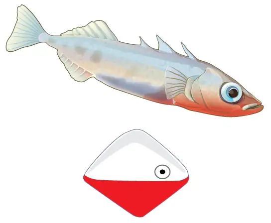
Migration¶
Migration is the long-range seasonal movement of animals. It is an evolved, adapted response to variation in resource availability, and it is a common phenomenon found in all major groups of animals. Birds fly south for the winter to get to warmer climates with sufficient food, and salmon migrate to their spawning grounds. The popular 2005 documentary March of the Penguins followed the 62-mile migration of emperor penguins through Antarctica to bring food back to their breeding site and to their young. Wildebeests (Figure 45.35) migrate over 1800 miles each year in search of new grasslands.
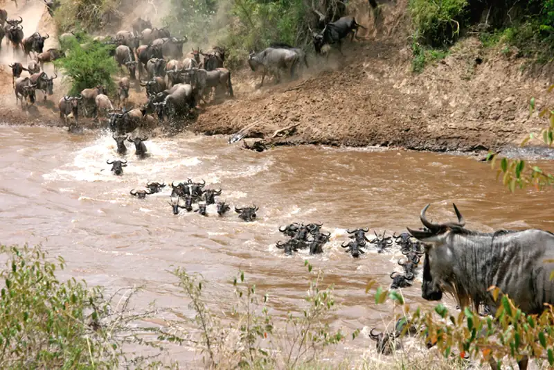
Although migration is thought of as innate behavior, only some migrating species always migrate (obligate migration). Animals that exhibit facultative migration can choose to migrate or not. Additionally, in some animals, only a portion of the population migrates, whereas the rest does not migrate (incomplete migration). For example, owls that live in the tundra may migrate in years when their food source, small rodents, is relatively scarce, but not migrate during the years when rodents are plentiful.
Foraging¶
Foraging is the act of searching for and exploiting food resources. Feeding behaviors that maximize energy gain and minimize energy expenditure are called optimal foraging behaviors, and these are favored by natural selection. The painted stork, for example, uses its long beak to search the bottom of a freshwater marshland for crabs and other food (Figure 45.36).
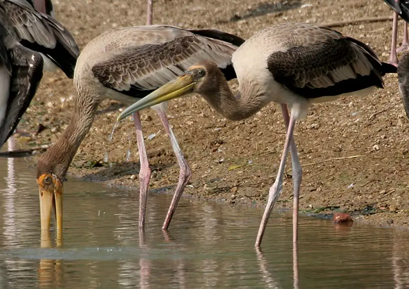
Innate Behaviors: Living in Groups¶
Not all animals live in groups, but even those that live relatively solitary lives, with the exception of those that can reproduce asexually, must mate. Mating usually involves one animal signaling another so as to communicate the desire to mate. There are several types of energy-intensive behaviors or displays associated with mating, called mating rituals. Other behaviors found in populations that live in groups are described in terms of which animal benefits from the behavior. In selfish behavior, only the animal in question benefits; in altruistic behavior, one animal’s actions benefit another animal; cooperative behavior describes when both animals benefit. All of these behaviors involve some sort of communication between population members.
Communication within a Species¶
Animals communicate with each other using stimuli known as signals. An example of this is seen in the three-spined stickleback, where the visual signal of a red region in the lower half of a fish signals males to become aggressive and signals females to mate. Other signals are chemical (pheromones), aural (sound), visual (courtship and aggressive displays), or tactile (touch). These types of communication may be instinctual or learned or a combination of both. These are not the same as the communication we associate with language, which has been observed only in humans and perhaps in some species of primates and cetaceans.
A pheromone is a secreted chemical signal used to obtain a response from another individual of the same species. The purpose of pheromones is to elicit a specific behavior from the receiving individual. Pheromones are especially common among social insects, but they are used by many species to attract the opposite sex, to sound alarms, to mark food trails, and to elicit other, more complex behaviors. Even humans are thought to respond to certain pheromones called axillary steroids. These chemicals influence human perception of other people, and in one study were responsible for a group of people synchronizing their menstrual cycles. The role of pheromones in human-to-human communication is not fully understood and continues to be researched.
Songs are an example of an aural signal, one that needs to be heard by the recipient. Perhaps the best known of these are songs of birds, which identify the species and are used to attract mates. Other well-known songs are those of whales, which are of such low frequency that they can travel long distances underwater. Dolphin species communicate with each other (and occasionally even with other species of dolphins) using a wide variety of vocalizations. Male crickets make chirping sounds using a specialized organ to attract a mate, repel other males, and to announce a successful mating.
Courtship displays are a series of ritualized visual behaviors (signals) designed to attract and convince a member of the opposite sex to mate. These displays are ubiquitous in the animal kingdom. Often these displays involve a series of steps, including an initial display by one member followed by a response from the other. If at any point, the display is performed incorrectly or a proper response is not given, the mating ritual is abandoned and the mating attempt will be unsuccessful. The mating display of the common stork is shown in Figure 45.37.
Aggressive displays are also common in the animal kingdom. For example, a dog bares its teeth when it wants another dog to back down. Presumably, these displays communicate not only the willingness of the animal to fight, but also its fighting ability. Although these displays do signal aggression on the part of the sender, it is thought that these displays are actually a mechanism to reduce the amount of actual fighting that occurs between members of the same species: they allow individuals to assess the fighting ability of their opponent and thus decide whether it is “worth the fight.” The testing of certain hypotheses using game theory has led to the conclusion that some of these displays may overstate an animal’s actual fighting ability and are used to “bluff” the opponent. This type of interaction, even if “dishonest,” would be favored by natural selection if it is successful more times than not.
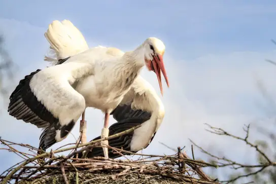
Distraction displays are seen in birds and some fish. They are designed to attract a predator away from the nest. This is an example of an altruistic behavior: it benefits the young more than the individual performing the display, which is putting itself at risk by doing so.
Many animals, especially primates, communicate with other members in the group through touch. Activities such as grooming, touching the shoulder or root of the tail, embracing, lip contact, and greeting ceremonies have all been observed in the Indian langur, an Old World monkey. Similar behaviors are found in other primates, especially in the great apes.
Interactive
The killdeer bird distracts predators from its eggs by faking a broken wing display in this video taken in Boise, Idaho. killdeer_bird
Altruistic Behaviors¶
Behaviors that lower the fitness of the individual but increase the fitness of another individual are termed altruistic. Examples of such behaviors are seen widely across the animal kingdom. Social insects such as worker bees have no ability to reproduce, yet they maintain the queen so she can populate the hive with her offspring. Meerkats keep a sentry standing guard to warn the rest of the colony about intruders, even though the sentry is putting itself at risk. Wolves and wild dogs bring meat to pack members not present during a hunt. Lemurs take care of infants unrelated to them. Although on the surface, these behaviors appear to be altruistic, the truth may not be so simple.
There has been much discussion over why altruistic behaviors exist. Do these behaviors lead to overall evolutionary advantages for their species? Do they help the altruistic individual pass on its own genes? And what about such activities between unrelated individuals? One explanation for altruistic-type behaviors is found in the genetics of natural selection. In the 1976 book, The Selfish Gene, scientist Richard Dawkins attempted to explain many seemingly altruistic behaviors from the viewpoint of the gene itself. Although a gene obviously cannot be selfish in the human sense, it may appear that way if the sacrifice of an individual benefits related individuals that share genes that are identical by descent (present in relatives because of common lineage). Mammal parents make this sacrifice to take care of their offspring. Emperor penguins migrate miles in harsh conditions to bring food back for their young. Selfish gene theory has been controversial over the years and is still discussed among scientists in related fields.
Even less-related individuals, those with less genetic identity than that shared by parent and offspring, benefit from seemingly altruistic behavior. The activities of social insects such as bees, wasps, ants, and termites are good examples. Sterile workers in these societies take care of the queen because they are closely related to it, and as the queen has offspring, she is passing on genes from the workers indirectly. Thus, it is of fitness benefit for the worker to maintain the queen without having any direct chance of passing on its genes due to its sterility. The lowering of individual fitness to enhance the reproductive fitness of a relative and thus one’s inclusive fitness evolves through kin selection. This phenomenon can explain many superficially altruistic behaviors seen in animals. However, these behaviors may not be truly defined as altruism in these cases because the actor is actually increasing its own fitness either directly (through its own offspring) or indirectly (through the inclusive fitness it gains through relatives that share genes with it).
Unrelated individuals may also act altruistically to each other, and this seems to defy the “selfish gene” explanation. An example of this observed in many monkey species where a monkey will present its back to an unrelated monkey to have that individual pick the parasites from its fur. After a certain amount of time, the roles are reversed and the first monkey now grooms the second monkey. Thus, there is reciprocity in the behavior. Both benefit from the interaction and their fitness is raised more than if neither cooperated nor if one cooperated and the other did not cooperate. This behavior is still not necessarily altruism, as the “giving” behavior of the actor is based on the expectation that it will be the “receiver” of the behavior in the future, termed reciprocal altruism. Reciprocal altruism requires that individuals repeatedly encounter each other, often the result of living in the same social group, and that cheaters (those that never “give back”) are punished.
Evolutionary game theory, a modification of classical game theory in mathematics, has shown that many of these so-called “altruistic behaviors” are not altruistic at all. The definition of “pure” altruism, based on human behavior, is an action that benefits another without any direct benefit to oneself. Most of the behaviors previously described do not seem to satisfy this definition, and game theorists are good at finding “selfish” components in them. Others have argued that the terms “selfish” and “altruistic” should be dropped completely when discussing animal behavior, as they describe human behavior and may not be directly applicable to instinctual animal activity. What is clear, though, is that heritable behaviors that improve the chances of passing on one’s genes or a portion of one’s genes are favored by natural selection and will be retained in future generations as long as those behaviors convey a fitness advantage. These instinctual behaviors may then be applied, in special circumstances, to other species, as long as it doesn’t lower the animal’s fitness.
Finding Sex Partners¶
Not all animals reproduce sexually, but many that do have the same challenge: they need to find a suitable mate and often have to compete with other individuals to obtain one. Significant energy is spent in the process of locating, attracting, and mating with the sex partner. Two types of selection occur during this process: intersexual selection, where individuals of one sex choose mates of the other sex, and intrasexual selection, the competition for mates between species members of the same sex. Intersexual selection is often complex because choosing a mate may be based on a variety of visual, aural, tactile, and chemical cues. An example of intersexual selection is when female peacocks choose to mate with the male with the brightest plumage. This type of selection often leads to traits in the chosen sex that do not enhance survival, but are those traits most attractive to the opposite sex (often at the expense of survival). Intrasexual selection involves mating displays and aggressive mating rituals such as rams butting heads—the winner of these battles is the one that is able to mate. Many of these rituals use up considerable energy but result in the selection of the healthiest, strongest, and/or most dominant individuals for mating.
Three general mating systems, all involving innate as opposed to learned behaviors, are seen in animal populations: monogamous, polygynous, and polyandrous.
Interactive
Visit this website for informative videos on sexual selection.
In monogamous systems, one male and one female are paired for at least one breeding season. In some animals, such as the gray wolf, these associations can last much longer, even a lifetime. Several theories may explain this type of mating system. The “mate-guarding hypothesis” states that males stay with the female to prevent other males from mating with her. This behavior is advantageous in such situations where mates are scarce and difficult to find. Another explanation is the “male-assistance hypothesis,” where males that help guard and rear their young will have more and healthier offspring. Monogamy is observed in many bird populations where, in addition to the parental care from the female, the male is also a major provider of parental care for the chicks. A third explanation for the evolutionary advantages of monogamy is the “female-enforcement hypothesis.” In this scenario, the female ensures that the male does not have other offspring that might compete with her own, so she actively interferes with the male’s signaling to attract other mates.
Polygynous mating refers to one male mating with multiple females. In these situations, the female must be responsible for most of the parental care as the single male is not capable of providing care to that many offspring. In resourced-based polygyny, males compete for territories with the best resources, and then mate with females that enter the territory, drawn to its resource richness. The female benefits by mating with a dominant, genetically fit male; however, it is at the cost of having no male help in caring for the offspring. An example is seen in the yellow-rumped honeyguide, a bird whose males defend beehives because the females feed on their wax. As the females approach, the male defending the nest will mate with them. Harem mating structures are a type of polygynous system where certain males dominate mating while controlling a territory with resources. Harem mating occurs in elephant seals, where the alpha male dominates the mating within the group. A third type of polygyny is a lek system. Here there is a communal courting area where several males perform elaborate displays for females, and the females choose their mate from this group. This behavior is observed in several bird species including the sage grouse and the prairie chicken.
In polyandrous mating systems, one female mates with many males. These types of systems are much rarer than monogamous and polygynous mating systems. In pipefishes and seahorses, males receive the eggs from the female, fertilize them, protect them within a pouch, and give birth to the offspring (Figure 45.38). Therefore, the female is able to provide eggs to several males without the burden of carrying the fertilized eggs.
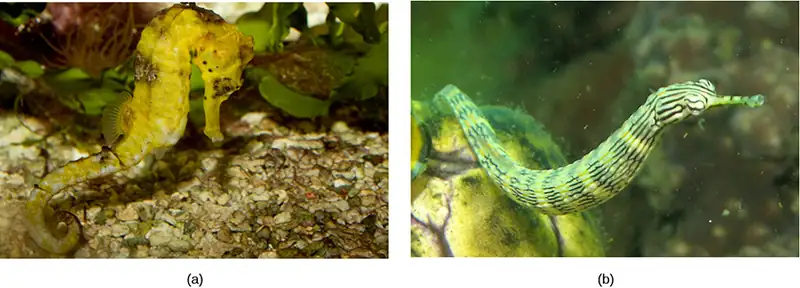
Simple Learned Behaviors¶
The majority of the behaviors previously discussed were innate or at least have an innate component (variations on the innate behaviors may be learned). They are inherited and the behaviors do not change in response to signals from the environment. Conversely, learned behaviors, even though they may have instinctive components, allow an organism to adapt to changes in the environment and are modified by previous experiences. Simple learned behaviors include habituation and imprinting—both are important to the maturation process of young animals.
Habituation¶
Habituation is a simple form of learning in which an animal stops responding to a stimulus after a period of repeated exposure. This is a form of non-associative learning, as the stimulus is not associated with any punishment or reward. Prairie dogs typically sound an alarm call when threatened by a predator, but they become habituated to the sound of human footsteps when no harm is associated with this sound, therefore, they no longer respond to them with an alarm call. In this example, habituation is specific to the sound of human footsteps, as the animals still respond to the sounds of potential predators.
Imprinting¶
Imprinting is a type of learning that occurs at a particular age or a life stage that is rapid and independent of the species involved. Hatchling ducks recognize the first adult they see, their mother, and make a bond with her. A familiar sight is ducklings walking or swimming after their mothers (Figure 45.39). This is another type of non-associative learning, but is very important in the maturation process of these animals as it encourages them to stay near their mother so they will be protected, greatly increasing their chances of survival. However, if newborn ducks see a human before they see their mother, they will imprint on the human and follow it in just the same manner as they would follow their real mother.
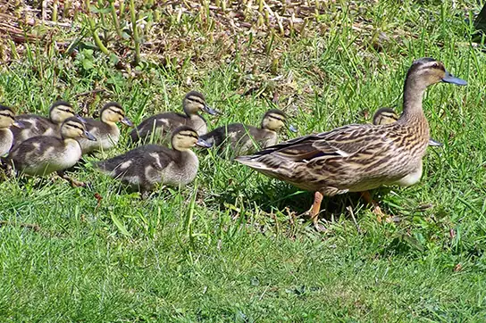
Interactive
The International Crane Foundation has helped raise the world’s population of whooping cranes from 21 individuals to about 600. Imprinting hatchlings has been a key to success: biologists wear full crane costumes so the birds never “see” humans. Watch this video to learn more. whooping_crane
Conditioned Behavior¶
Conditioned behaviors are types of associative learning, where a stimulus becomes associated with a consequence. During operant conditioning, the behavioral response is modified by its consequences, with regards to its form, strength, or frequency.
Classical Conditioning¶
In classical conditioning, a response called the conditioned response is associated with a stimulus that it had previously not been associated with, the conditioned stimulus. The response to the original, unconditioned stimulus is called the unconditioned response. The most cited example of classical conditioning is Ivan Pavlov’s experiments with dogs (Figure 45.40). In Pavlov’s experiments, the unconditioned response was the salivation of dogs in response to the unconditioned stimulus of seeing or smelling their food. The conditioning stimulus that researchers associated with the unconditioned response was the ringing of a bell. During conditioning, every time the animal was given food, the bell was rung. This was repeated during several trials. After some time, the dog learned to associate the ringing of the bell with food and to respond by salivating. After the conditioning period was finished, the dog would respond by salivating when the bell was rung, even when the unconditioned stimulus, the food, was absent. Thus, the ringing of the bell became the conditioned stimulus and the salivation became the conditioned response. Although it is thought by some scientists that the unconditioned and conditioned responses are identical, even Pavlov discovered that the saliva in the conditioned dogs had characteristic differences when compared to the unconditioned dog.
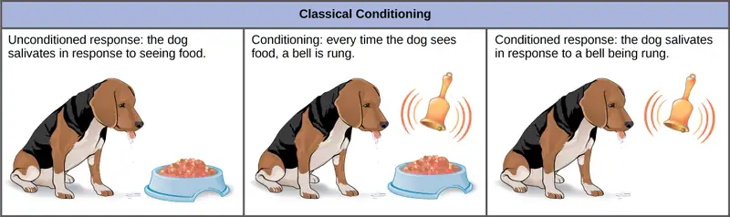
It had been thought by some scientists that this type of conditioning required multiple exposures to the paired stimulus and response, but it is now known that this is not necessary in all cases, and that some conditioning can be learned in a single pairing experiment. Classical conditioning is a major tenet of behaviorism, a branch of psychological philosophy that proposes that all actions, thoughts, and emotions of living things are behaviors that can be treated by behavior modification and changes in the environment.
Operant Conditioning¶
In operant conditioning, the conditioned behavior is gradually modified by its consequences as the animal responds to the stimulus. A major proponent of such conditioning was psychologist B.F. Skinner, the inventor of the Skinner box. Skinner put rats in his boxes that contained a lever that would dispense food to the rat when depressed. While initially the rat would push the lever a few times by accident, it eventually associated pushing the lever with getting the food. This type of learning is an example of operant conditioning. Operant learning is the basis of most animal training. The conditioned behavior is continually modified by positive or negative reinforcement, often a reward such as food or some type of punishment, respectively. In this way, the animal is conditioned to associate a type of behavior with the punishment or reward, and, over time, can be induced to perform behaviors that they would not have done in the wild, such as the “tricks” dolphins perform at marine amusement park shows (Figure 45.41).
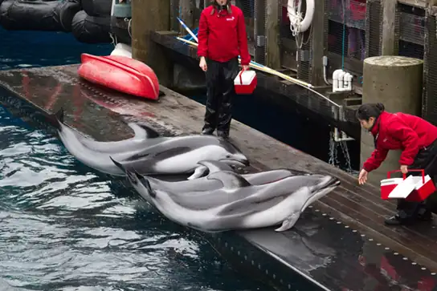
Cognitive Learning¶
Classical and operant conditioning are inefficient ways for humans and other intelligent animals to learn. Some primates, including humans, are able to learn by imitating the behavior of others and by taking instructions. The development of complex language by humans has made cognitive learning, the manipulation of information using the mind, the most prominent method of human learning. In fact, that is how students are learning right now by reading this book. As students read, they can make mental images of objects or organisms and imagine changes to them, or behaviors by them, and anticipate the consequences. In addition to visual processing, cognitive learning is also enhanced by remembering past experiences, touching physical objects, hearing sounds, tasting food, and a variety of other sensory-based inputs. Cognitive learning is so powerful that it can be used to understand conditioning in detail. In the reverse scenario, conditioning cannot help someone learn about cognition.
Classic work on cognitive learning was done by Wolfgang Köhler with chimpanzees. He demonstrated that these animals were capable of abstract thought by showing that they could learn how to solve a puzzle. When a banana was hung in their cage too high for them to reach, and several boxes were placed randomly on the floor, some of the chimps were able to stack the boxes one on top of the other, climb on top of them, and get the banana. This implies that they could visualize the result of stacking the boxes even before they had performed the action. This type of learning is much more powerful and versatile than conditioning.
Cognitive learning is not limited to primates, although they are the most efficient in using it. Maze running experiments done with rats by H.C. Blodgett in the 1920s were the first to show cognitive skills in a simple mammal. The motivation for the animals to work their way through the maze was a piece of food at its end. In these studies, the animals in Group I were run in one trial per day and had food available to them each day on completion of the run (Figure 45.42). Group II rats were not fed in the maze for the first six days and subsequent runs were done with food starting at day seven. Group III rats were not fed for two days, and runs with food started on day three. The results were that the control rats, Group I, learned quickly, and figured out how to run the maze in seven days. Group III did not learn much during the two days without food, but rapidly caught up to the control group when given the food reward. Group II learned very slowly for the six days with no reward to motivate them, and they did not begin to catch up to the control group until the day food was given, and then it took two days longer to learn the maze.
![A diagram shows a rat maze that has several turns and dead ends. Next to this maze is a graph showing the average error of the rats navigating the maze plotted versus the day of the experiment. Rats that are rewarded at the end of each run learn the maze quickly, and the number of errors they make in navigating the maze rapidly drops from six on day one to one on day eleven. Rats that are not rewarded on the first two days but are rewarded from day three learn the maze slowly at first, but quickly after the reward is present. Rats that are not rewarded on the first six days but are rewarded starting at day seven gradually reduce the number of errors over the first six days, but rapidly reduce their errors after a reward is present.](img/figure-45-07-09.webp)
It may not be immediately obvious that this type of learning is different than conditioning. Although one might be tempted to believe that the rats simply learned how to find their way through a conditioned series of right and left turns, E.C. Tolman proved a decade later that the rats were making a representation of the maze in their minds, which he called a “cognitive map.” This was an early demonstration of the power of cognitive learning and how these abilities were not just limited to humans.
Sociobiology¶
Sociobiology is an interdisciplinary science originally popularized by social insect researcher E.O. Wilson in the 1970s. Wilson defined the science as “the extension of population biology and evolutionary theory to social organization.”9 The main thrust of sociobiology is that animal and human behavior, including aggressiveness and other social interactions, can be explained almost solely in terms of genetics and natural selection. This science is controversial; noted scientists such as the late Stephen Jay Gould criticized the approach for ignoring the environmental effects on behavior. This is another example of the “nature versus nurture” debate of the role of genetics versus the role of environment in determining an organism’s characteristics.
Sociobiology also links genes with behaviors and has been associated with “biological determinism,” the belief that all behaviors are hardwired into our genes. No one disputes that certain behaviors can be inherited and that natural selection plays a role retaining them. It is the application of such principles to human behavior that sparks this controversy, which remains active today.
Chapter Review¶
Key Terms¶
- age structure
- proportion of population members at specific age ranges
- aggressive display
- visual display by a species member to discourage other members of the same species or different species
- aposematic coloration
- warning coloration used as a defensive mechanism against predation
- Batesian mimicry
- type of mimicry where a non-harmful species takes on the warning colorations of a harmful one
- behavior
- change in an organism’s activities in response to a stimulus
- behavioral biology
- study of the biology and evolution of behavior
- biotic potential (rmax)
- maximal potential growth rate of a species
- birth rate (B)
- number of births within a population at a specific point in time
- camouflage
- avoid detection by blending in with the background
- carrying capacity (K)
- number of individuals of a species that can be supported by the limited resources of a habitat
- classical conditioning
- association of a specific stimulus and response through conditioning
- climax community
- final stage of succession, where a stable community is formed by a characteristic assortment of plant and animal species
- cognitive learning
- knowledge and skills acquired by the manipulation of information in the mind
- commensalism
- relationship between species wherein one species benefits from the close, prolonged interaction, while the other species neither benefits nor is harmed
- competitive exclusion principle
- no two species within a habitat can coexist when they compete for the same resources at the same place and time
- conditioned behavior
- behavior that becomes associated with a specific stimulus through conditioning
- courtship display
- visual display used to attract a mate
- death rate (D)
- number of deaths within a population at a specific point in time
- demographic-based population model
- modern model of population dynamics incorporating many features of the r- and K-selection theory
- demography
- statistical study of changes in populations over time
- density-dependent regulation
- regulation of population that is influenced by population density, such as crowding effects; usually involves biotic factors
- density-independent regulation
- regulation of populations by factors that operate independent of population density, such as forest fires and volcanic eruptions; usually involves abiotic factors
- distraction display
- visual display used to distract predators away from a nesting site
- Emsleyan/Mertensian mimicry
- type of mimicry where a harmful species resembles a less harmful one
- energy budget
- allocation of energy resources for body maintenance, reproduction, and parental care
- environmental disturbance
- change in the environment caused by natural disasters or human activities
- ethology
- biological study of animal behavior
- exponential growth
- accelerating growth pattern seen in species under conditions where resources are not limiting
- fecundity
- potential reproductive capacity of an individual
- fixed action pattern
- series of instinctual behaviors that, once initiated, always goes to completion regardless of changes in the environment
- foraging
- behaviors species use to find food
- foundation species
- species which often forms the major structural portion of the habitat
- habituation
- ability of a species to ignore repeated stimuli that have no consequence
- host
- organism a parasite lives on
- imprinting
- identification of parents by newborns as the first organism they see after birth
- innate behavior
- instinctual behavior that is not altered by changes in the environment
- intersexual selection
- selection of a desirable mate of the opposite sex
- interspecific competition
- competition between species for resources in a shared habitat or environment
- intrasexual selection
- competition between members of the same sex for a mate
- intraspecific competition
- competition between members of the same species
- island biogeography
- study of life on island chains and how their geography interacts with the diversity of species found there
- iteroparity
- life history strategy characterized by multiple reproductive events during the lifetime of a species
- J-shaped growth curve
- shape of an exponential growth curve
- K-selected species
- species suited to stable environments that produce a few, relatively large offspring and provide parental care
- keystone species
- species whose presence is key to maintaining biodiversity in an ecosystem and to upholding an ecological community’s structure
- kin selection
- sacrificing one’s own life so that one’s genes will be passed on to future generations by relatives
- kinesis
- undirected movement of an organism in response to a stimulus
- learned behavior
- behavior that responds to changes in the environment
- life history
- inherited pattern of resource allocation under the influence of natural selection and other evolutionary forces
- life table
- table showing the life expectancy of a population member based on its age
- logistic growth
- leveling off of exponential growth due to limiting resources
- mark and recapture
- technique used to determine population size in mobile organisms
- migration
- long-range seasonal movement of animal species
- monogamy
- mating system whereby one male and one female remain coupled for at least one mating season
- mortality rate
- proportion of population surviving to the beginning of an age interval that die during the age interval
- mutualism
- symbiotic relationship between two species where both species benefit
- Müllerian mimicry
- type of mimicry where species share warning coloration and all are harmful to predators
- one-child policy
- China’s policy to limit population growth by limiting urban couples to have only one child or face the penalty of a fine
- operant conditioning
- learned behaviors in response to positive and/or negative reinforcement
- parasite
- organism that uses resources from another species, the host
- pioneer species
- first species to appear in primary and secondary succession
- polyandry
- mating system where one female mates with many males
- polygyny
- mating system where one male mates with many females
- population density
- number of population members divided by the area or volume being measured
- population growth rate
- number of organisms added in each reproductive generation
- population size (N)
- number of population members in a habitat at the same time
- primary succession
- succession on land that previously has had no life
- quadrat
- square made of various materials used to determine population size and density in slow moving or stationary organisms
- r-selected species
- species suited to changing environments that produce many offspring and provide little or no parental care
- reflex action
- action in response to direct physical stimulation of a nerve
- relative species abundance
- absolute population size of a particular species relative to the population sizes of other species within the community
- S-shaped growth curve
- shape of a logistic growth curve
- secondary succession
- succession in response to environmental disturbances that move a community away from its equilibrium
- semelparity
- life history strategy characterized by a single reproductive event followed by death
- signal
- method of communication between animals including those obtained by the senses of smell, hearing, sight, or touch
- species dispersion pattern
- (also, species distribution pattern) spatial location of individuals of a given species within a habitat at a particular point in time
- species richness
- number of different species in a community
- survivorship curve
- graph of the number of surviving population members versus the relative age of the member
- symbiosis
- close interaction between individuals of different species over an extended period of time that impacts the abundance and distribution of the associating populations
- taxis
- directed movement in response to a stimulus
- zero population growth
- steady population size where birth rates and death rates are equal
Summary¶
45.1 Population Demography¶
Populations are individuals of a species that live in a particular habitat. Ecologists measure characteristics of populations: size, density, dispersion pattern, age structure, and sex ratio. Life tables are useful to calculate life expectancies of individual population members. Survivorship curves show the number of individuals surviving at each age interval plotted versus time.
45.2 Life Histories and Natural Selection¶
All species have evolved a pattern of living, called a life history strategy, in which they partition energy for growth, maintenance, and reproduction. These patterns evolve through natural selection; they allow species to adapt to their environment to obtain the resources they need to successfully reproduce. There is an inverse relationship between fecundity and parental care. A species may reproduce early in life to ensure surviving to a reproductive age or reproduce later in life to become larger and healthier and better able to give parental care. A species may reproduce once (semelparity) or many times (iteroparity) in its life.
45.3 Environmental Limits to Population Growth¶
Populations with unlimited resources grow exponentially, with an accelerating growth rate. When resources become limiting, populations follow a logistic growth curve. The population of a species will level off at the carrying capacity of its environment.
45.4 Population Dynamics and Regulation¶
Populations are regulated by a variety of density-dependent and density-independent factors. Species are divided into two categories based on a variety of features of their life history patterns: r-selected species, which have large numbers of offspring, and K-selected species, which have few offspring. The r- and K-selection theory has fallen out of use; however, many of its key features are still used in newer, demographically-based models of population dynamics.
45.5 Human Population Growth¶
The world’s human population is growing at an exponential rate. Humans have increased the world’s carrying capacity through migration, agriculture, medical advances, and communication. The age structure of a population allows us to predict population growth. Unchecked human population growth could have dire long-term effects on our environment.
45.6 Community Ecology¶
Communities include all the different species living in a given area. The variety of these species is called species richness. Many organisms have developed defenses against predation and herbivory, including mechanical defenses, warning coloration, and mimicry, as a result of evolution and the interaction with other members of the community. Two species cannot exist in the same habitat competing directly for the same resources. Species may form symbiotic relationships such as commensalism or mutualism. Community structure is described by its foundation and keystone species. Communities respond to environmental disturbances by succession (the predictable appearance of different types of plant species) until a stable community structure is established.
45.7 Behavioral Biology: Proximate and Ultimate Causes of Behavior¶
Behaviors are responses to stimuli. They can either be instinctual/innate behaviors, which are not influenced by the environment, or learned behaviors, which are influenced by environmental changes. Instinctual behaviors include mating systems and methods of communication. Learned behaviors include imprinting and habituation, conditioning, and, most powerfully, cognitive learning.
Visual Connection Questions¶
45.1 Population Demography¶
1. Figure 45.2 As this graph shows, population density typically decreases with increasing body size. Why do you think this is the case?
Answer
Figure 45.2 Smaller animals require less food and other resources, so the environment can support more of them.
45.3 Environmental Limits to Population Growth¶
2. Figure 45.10b If the major food source of the seals declines due to pollution or overfishing, which of the following would likely occur?
- The carrying capacity of seals would decrease, as would the seal population.
- The carrying capacity of seals would decrease, but the seal population would remain the same.
- The number of seal deaths would increase but the number of births would also increase, so the population size would remain the same.
- The carrying capacity of seals would remain the same, but the population of seals would decrease.
Answer
45.5 Human Population Growth¶
3. Figure 45.16 Age structure diagrams for rapidly growing, slow growing, and stable populations are shown in stages 1 through 3. What type of population change do you think stage 4 represents?
Answer
Figure 45.16 Stage 4 represents a population that is decreasing.
Review Questions¶
45.1 Population Demography¶
4. Which of the following methods will tell an ecologist about both the size and density of a population?
- mark and recapture
- mark and release
- quadrat
- life table
Answer
C
5. Which of the following is best at showing the life expectancy of an individual within a population?
- quadrat
- mark and recapture
- survivorship curve
- life table
Answer
D
6. Humans have which type of survivorship curve?
- Type I
- Type II
- Type III
- Type IV
Answer
A
7. How is a clumped population distribution beneficial for prey animals?
- Being a member of a larger group provides protection for each individual from predators.
- Prey animals rely on each other to acquire food.
- Prey animals live in small family groups to raise young.
- Clumped population distributions ensure that at least one member of the population knows how to identify the seasonal migration route.
Answer
A
45.2 Life Histories and Natural Selection¶
8. Which of the following is associated with long-term parental care?
- few offspring
- many offspring
- semelparity
- fecundity
Answer
A
9. Which of the following is associated with multiple reproductive episodes during a species’ lifetime?
- semiparity
- iteroparity
- semelparity
- fecundity
Answer
B
10. Which of the following is associated with the reproductive potential of a species?
- few offspring
- many offspring
- semelparity
- fecundity
Answer
D
45.3 Environmental Limits to Population Growth¶
11. Species with limited resources usually exhibit a(n) ________ growth curve.
- logistic
- logical
- experimental
- exponential
Answer
A
12. The maximum rate of increased characteristic of a species is called its ________.
- limit
- carrying capacity
- biotic potential
- exponential growth pattern
Answer
C
13. The population size of a species capable of being supported by the environment is called its ________.
- limit
- carrying capacity
- biotic potential
- logistic growth pattern
Answer
B
45.4 Population Dynamics and Regulation¶
14. Species that have many offspring at one time are usually:
- r-selected
- K-selected
- both r- and K-selected
- not selected
Answer
A
15. A forest fire is an example of ________ regulation.
- density-dependent
- density-independent
- r-selected
- K-selected
Answer
B
16. Primates are examples of:
- density-dependent species
- density-independent species
- r-selected species
- K-selected species
Answer
D
17. Which of the following statements does not support the conclusion that giraffes are k-selected species?
- Giraffes are approximately 6’ tall and weigh 150 lbs at birth.
- Wild giraffes begin mating at 6-7 years of age.
- Newborn giraffes are capable of coordinated walking within an hour of birth, and running within 24 hours of birth.
- Giraffes rarely give birth to twins.
Answer
C
18. Which of the following events would not negatively impact Yellowstone’s grey wolf carrying capacity?
- snow in winter
- a beaver damming a river upstream
- a forest fire
- chronic wasting disease in the deer population
Answer
A
45.5 Human Population Growth¶
19. A country with zero population growth is likely to be ________.
- in Africa
- in Asia
- economically developed
- economically underdeveloped
Answer
D
20. Which type of country has the greatest proportion of young individuals?
- economically developed
- economically underdeveloped
- countries with zero population growth
- countries in Europe
Answer
B
21. Which of the following is not a way that humans have increased the carrying capacity of the environment?
- agriculture
- using large amounts of natural resources
- domestication of animals
- use of language
Answer
B
45.6 Community Ecology¶
22. The first species to live on new land, such as that formed from volcanic lava, are called ________.
- climax community
- keystone species
- foundation species
- pioneer species
Answer
D
23. Which type of mimicry involves multiple species with similar warning coloration that are all toxic to predators?
- Batesian mimicry
- Müllerian mimicry
- Emsleyan/Mertensian mimicry
- Mertensian mimicry
Answer
B
24. A symbiotic relationship where both of the coexisting species benefit from the interaction is called ________.
- commensalism
- parasitism
- mutualism
- communism
Answer
C
25. Which of the following is not a mutualistic relationship?
- a shark using an aquatic cleaning station
- a helminth feeding from its host
- a bumblebee collecting pollen from a flower
- bacteria living in the gut of humans
Answer
B
45.7 Behavioral Biology: Proximate and Ultimate Causes of Behavior¶
26. The ability of rats to learn how to run a maze is an example of ________.
- imprinting
- classical conditioning
- operant conditioning
- cognitive learning
Answer
D
27. The training of animals usually involves ________.
- imprinting
- classical conditioning
- operant conditioning
- cognitive learning
Answer
C
28. The sacrifice of the life of an individual so that the genes of relatives may be passed on is called ________.
- operant learning
- kin selection
- kinesis
- imprinting
Answer
B
29. Why are polyandrous mating systems more rare than polygynous matings?
- Only males are capable of multiple rounds of reproduction within a single breeding season.
- Only females care for the young.
- Females usually experience more intrasexual selection pressure than males.
- Females usually devote more energy to offspring production and development.
Answer
D
Critical Thinking Questions¶
45.1 Population Demography¶
30. Describe how a researcher would determine the size of a penguin population in Antarctica using the mark and release method.
Answer
The researcher would mark a certain number of penguins with a tag, release them back into the population, and, at a later time, recapture penguins to see what percentage of the recaptured penguins was tagged. This percentage would allow an estimation of the size of the penguin population.
31. The CDC released the following data in its 2013 Vital Statistics report.
Table 45.3
| Age interval | Number dying in age interval | Number surviving at beginning of age interval |
| 0-10 | 756 | 100,000 |
| 11-20 | 292 | 99,244 |
| 21-30 | 890 | 98,953 |
| 31-40 | 1,234 | 98,164 |
| 41-50 | 2,457 | 96,811 |
| 51-60 | 5,564 | 94,352 |
| 61-70 | 10,479 | 88,788 |
Calculate the mortality rate for each age interval, and describe the trends in adult and childhood mortality per 100,000 births in the United States in 2013.
Answer
Mortality is calculated as [(Number Dying)/(Number Surviving)] x 1000 so the completed life table should read:
Table 45.4
| Age interval | Number dying in age interval | Number surviving at beginning of age interval | Mortality rate |
| 0-10 | 756 | 100,000 | 7.56 |
| 11-20 | 292 | 99,244 | 2.94 |
| 21-30 | 890 | 98,953 | 8.99 |
| 31-40 | 1,234 | 98,164 | 12.6 |
| 41-50 | 2,457 | 96,811 | 25.4 |
| 51-60 | 5,564 | 94,352 | 58.97 |
| 61-70 | 10,479 | 88,788 | 118.0 |
The table shows that mortality is high among very young children Americans (under age 10), then falls for teens and young adults. Mortality starts rising again in middle age, nearly doubling from the 50s to the 60s.
45.2 Life Histories and Natural Selection¶
32. Why is long-term parental care not associated with having many offspring during a reproductive episode?
Answer
Parental care is not feasible for organisms having many offspring because they do not have the energy available to take care of offspring. Most of their energy budget is used in the formation of seeds or offspring, so there is little left for parental care. Also, the sheer number of offspring would make individual parental care impossible.
33. Describe the difference in evolutionary pressures experienced by an animal that begins reproducing early and an animal that reproduces late in its lifecycle.
Answer
A species that reproduces early in its life cycle is under evolutionary pressure to reach sexual maturity as soon as possible. Animals that mature earliest will be able to reproduce the most times, and therefore more of the next generation will carry their early maturation genes.
A species that reproduces late in its life cycle will only generate offspring from parents that were able to survive in their habitats. This increases the likelihood that the next generation will be well-adapted to its environment.
45.3 Environmental Limits to Population Growth¶
34. Describe the rate of population growth that would be expected at various parts of the S-shaped curve of logistic growth.
Answer
In the first part of the curve, when few individuals of the species are present and resources are plentiful, growth is exponential, similar to a J-shaped curve. Later, growth slows due to the species using up resources. Finally, the population levels off at the carrying capacity of the environment, and it is relatively stable over time.
35. Describe how the population of a species that survives a mass extinction event would change in size and growth pattern over time beginning immediately after the extinction event.
Answer
Following a mass extinction event, the few surviving species can be considered to have access to unlimited natural resources since there would be minimal competition (due to low organism density). This means that the species would initially experience rapid exponential population growth, and the number of species members in the environment would rapidly increase over time. However, the further time progresses past the mass extinction event, the more the environment becomes populated by the species and its competitors. As resource availability declines the population growth rate will slow and enter logistic growth. Eventually, the population will meet the carrying capacity of the environment and stop increasing.
45.4 Population Dynamics and Regulation¶
36. Give an example of how density-dependent and density-independent factors might interact.
Answer
If a natural disaster such as a fire happened in the winter, when populations are low, it would have a greater effect on the overall population and its recovery than if the same disaster occurred during the summer, when population levels are high.
45.5 Human Population Growth¶
37. Describe the age structures in rapidly growing countries, slowly growing countries, and countries with zero population growth.
Answer
Rapidly growing countries have a large segment of the population at a reproductive age or younger. Slower growing populations have a lower percentage of these individuals, and countries with zero population growth have an even lower percentage. On the other hand, a high proportion of older individuals is seen mostly in countries with zero growth, and a low proportion is most common in rapidly growing countries.
38. Since the introduction of the Endangered Species Act the number of species on the protected list has more than doubled. Describe how the human population’s growth pattern contributes to the rise in endangered species.
Answer
Continued exponential human population growth results in the human population requiring more resources to sustain itself. These resources are usually taken at the expense of the environment and the organisms that rely on the resources in that environment (e.g., habitat destruction for human development, water rerouting for irrigation, etc.). The continued use of fossil fuels to generate power for human activities also contributes to climate change, changing climates in some areas so that certain species can no longer survive there.
45.6 Community Ecology¶
39. Describe the competitive exclusion principle and its effects on competing species.
Answer
The competitive exclusion principle states that no two species competing for the same resources at the same time and place can coexist over time. Thus, one of the competing species will eventually dominate. On the other hand, if the species evolve such that they use resources from different parts of the habitat or at different times of day, the two species can exist together indefinitely.
40. Jaguars are a keystone species in the Amazon. Describe how they can be so essential to the ecosystem despite being significantly less abundant than many other species.
Answer
Jaguars are an apex predator in the Amazon, eating a variety of prey animals and not serving as prey to any other predators. Through predation, they control the population sizes of the smaller herbivores and omnivores. If jaguars were to disappear from the ecosystem, the smaller herbivore populations would dramatically increase, and could overconsume the plant populations.
45.7 Behavioral Biology: Proximate and Ultimate Causes of Behavior¶
41. Describe Pavlov’s dog experiments as an example of classical conditioning.
Answer
Dogs salivated in response to food. This was the unconditioned stimulus and response. Dogs exposed to food had a bell rung repeatedly at the same time, eventually learning to associate the bell with food. Over time, the dogs would salivate when the bell was rung, even in the absence of food. Thus, the bell became the conditioned stimulus, and the salivation in response to the bell became the conditioned response.
42. Describe the advantage of using an aural or pheromone signal to attract a mate as opposed to a visual signal. How might the population density contribute to the evolution of aural or visual mating rituals?
Answer
Animals that use aural or pheromone signals to communicate with potential mates are able to signal over longer distances. Sound waves and chemicals can diffuse out into an environment while visual cues require a direct line of sight between the sender and receiver. Animals that use aural cues to acquire mates probably exhibit a lower population density than animals that use visual cues.
Adapted from Biology 2e by OpenStax, licensed under CC BY 4.0. Access the original for free at openstax.org. Changes: converted to the web reading format of The Open Book Project.
-
Data Adapted from Edward S. Deevey, Jr., “Life Tables for Natural Populations of Animals,” The Quarterly Review of Biology 22, no. 4 (December 1947): 283-314. ↩
-
Adapted from Phillip G. Byrne and William R. Rice, “Evidence for adaptive male mate choice in the fruit fly Drosophila melanogaster,” Proc Biol Sci. 273, no. 1589 (2006): 917-922, doi: 10.1098/rspb.2005.3372. ↩
-
N.A. Croll et al., “The Population Biology and Control of Ascaris lumbricoides in a Rural Community in Iran.” Transactions of the Royal Society of Tropical Medicine and Hygiene 76, no. 2 (1982): 187-197, doi:10.1016/0035-9203(82)90272-3. ↩
-
Martin Walker et al., “Density-Dependent Effects on the Weight of Female Ascaris lumbricoides Infections of Humans and its Impact on Patterns of Egg Production.” Parasites & Vectors 2, no. 11 (February 2009), doi:10.1186/1756-3305-2-11. ↩
-
N.A. Croll et al., “The Population Biology and Control of Ascaris lumbricoides in a Rural Community in Iran.” Transactions of the Royal Society of Tropical Medicine and Hygiene 76, no. 2 (1982): 187-197, doi:10.1016/0035-9203(82)90272-3. ↩
-
David Nogués-Bravo et al., “Climate Change, Humans, and the Extinction of the Woolly Mammoth.” PLoS Biol 6 (April 2008): e79, doi:10.1371/journal.pbio.0060079. ↩
-
G.M. MacDonald et al., “Pattern of Extinction of the Woolly Mammoth in Beringia.” Nature Communications 3, no. 893 (June 2012), doi:10.1038/ncomms1881. ↩
-
Paul R. Erlich, prologue to The Population Bomb, (1968; repr., New York: Ballantine, 1970). ↩
-
Edward O. Wilson. On Human Nature (1978; repr., Cambridge: Harvard University Press, 2004), xx. ↩